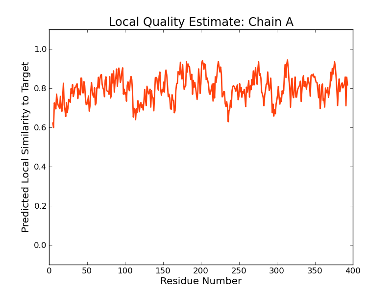
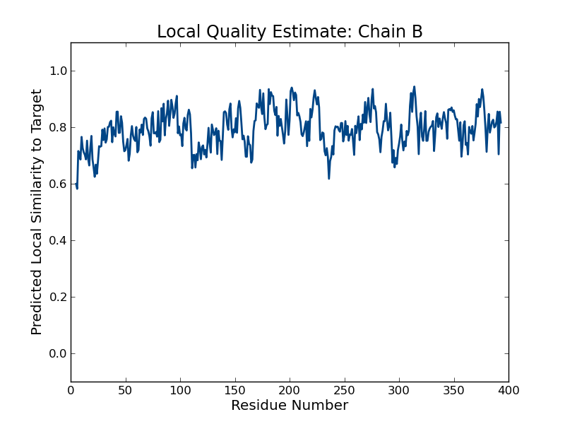
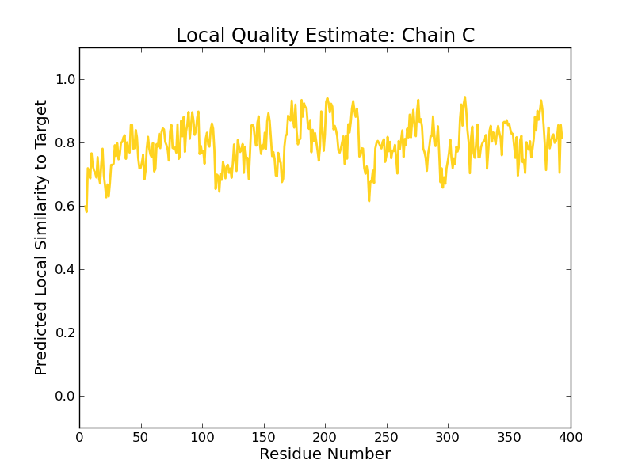
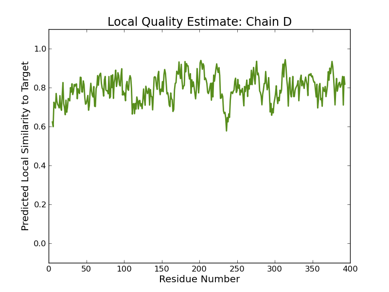
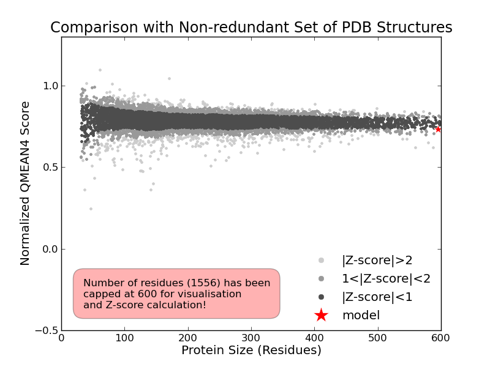

SWISS-MODEL Homology Modelling Report |
Model Building Report
This document lists the results for the homology modelling project "T451DRAFT_1246" submitted to SWISS-MODEL workspace on July 11, 2017, 11:10 p.m..The submitted primary amino acid sequence is given in Table T1.
If you use any results in your research, please cite the relevant publications:
Marco Biasini; Stefan Bienert; Andrew Waterhouse; Konstantin Arnold; Gabriel Studer; Tobias Schmidt; Florian Kiefer; Tiziano Gallo Cassarino; Martino Bertoni; Lorenza Bordoli; Torsten Schwede. (2014). SWISS-MODEL: modelling protein tertiary and quaternary structure using evolutionary information. Nucleic Acids Research (1 July 2014) 42 (W1): W252-W258; doi: 10.1093/nar/gku340.Arnold, K., Bordoli, L., Kopp, J. and Schwede, T. (2006) The SWISS-MODEL workspace: a web-based environment for protein structure homology modelling. Bioinformatics, 22, 195-201.
Benkert, P., Biasini, M. and Schwede, T. (2011) Toward the estimation of the absolute quality of individual protein structure models. Bioinformatics, 27, 343-350
Results
The SWISS-MODEL template library (SMTL version 2017-07-06, PDB release 2017-06-30) was searched with Blast (Altschul et al., 1997) and HHBlits (Remmert, et al., 2011) for evolutionary related structures matching the target sequence in Table T1. For details on the template search, see Materials and Methods. Overall 989 templates were found (Table T2).
Models
The following model was built (see Materials and Methods "Model Building"):
Model #01 | File | Built with | Oligo-State | Ligands | GMQE | QMEAN |
|---|---|---|---|---|---|---|
 | PDB | ProMod3 Version 1.0.2. | homo-tetramer (matching prediction) | None | 0.79 | -0.93 |
|  |  |
| Template | Seq Identity | Oligo-state | Found by | Method | Resolution | Seq Similarity | Range | Coverage | Description |
|---|---|---|---|---|---|---|---|---|---|
| 5m3z.1.A | 44.59 | homo-tetramer | BLAST | X-ray | 1.45Å | 0.42 | 5 - 393 | 0.99 | Methionine gamma-lyase |
| Ligand | Added to Model | Description |
|---|---|---|
| NLE | ✕ - Binding site not conserved. | NORLEUCINE |
| NLE | ✕ - Binding site not conserved. | NORLEUCINE |
| NLE | ✕ - Binding site not conserved. | NORLEUCINE |
| NLE | ✕ - Binding site not conserved. | NORLEUCINE |
| PGE | ✕ - Not biologically relevant. | TRIETHYLENE GLYCOL |
| PGE | ✕ - Not biologically relevant. | TRIETHYLENE GLYCOL |
| PGE | ✕ - Not biologically relevant. | TRIETHYLENE GLYCOL |
| PGE | ✕ - Not biologically relevant. | TRIETHYLENE GLYCOL |
| PLP | ✕ - Binding site not conserved. | PYRIDOXAL-5'-PHOSPHATE |
| PLP | ✕ - Binding site not conserved. | PYRIDOXAL-5'-PHOSPHATE |
| PLP | ✕ - Binding site not conserved. | PYRIDOXAL-5'-PHOSPHATE |
| PLP | ✕ - Binding site not conserved. | PYRIDOXAL-5'-PHOSPHATE |
| PY6 | ✕ - Binding site not conserved. | 2-[O-PHOSPHONOPYRIDOXYL]-AMINO-HEXANOIC ACID |
| PY6 | ✕ - Binding site not conserved. | 2-[O-PHOSPHONOPYRIDOXYL]-AMINO-HEXANOIC ACID |
| PY6 | ✕ - Binding site not conserved. | 2-[O-PHOSPHONOPYRIDOXYL]-AMINO-HEXANOIC ACID |
| PY6 | ✕ - Binding site not conserved. | 2-[O-PHOSPHONOPYRIDOXYL]-AMINO-HEXANOIC ACID |
Target MKDINWNNYSLETQAIRAGHK-RTHEDEHSIPIFATSSYVFKSAEEAALRFTGQKPGNIYSRFTNPTVSAFQERLALMEK
5m3z.1.A ----DCRTYGFNTQIVHAGQQPDPSTGALSTPIFQTSTFVFDSAEQGAARFALEESGYIYTRLGNPTTDALEKKLAVLER
Target GERCLAFSSGMAAIMAVGMGLLKAGDHVVCSRGVFGNTVLMFQNYFSKFGVETDFVDLIDAAAWEAAIKPNTRFLFLETP
5m3z.1.A GEAGLATASGISAITTTLLTLCQQGDHIVSASAIYGHTHAFLSHSMPKFGINVSFVDAAKPEEIRAAMRPETKVVYIETP
Target SNPLTEIADISVLADIAHKHDCLLIVDNCFCTPVLQKPLELGADIVVHSATKYIDGQGRCVGGAVVASEEIIEKYIYPYL
5m3z.1.A ANPTLSLVDIETVAGIAHQQGALLVVDNTFMSPYCQQPLQLGADIVVHSVTKYINGHGDVIGGIIVGKQEFIDQARFVGL
Target R--TGGSTMSPFNAWVFLSGLETLAVRMKVHCDSAFELALWLERQPGVAKVHYPGLQSHAQHELAKRQQSHFGGIVSFEL
5m3z.1.A KDITGGC-MSPFNAWLTLRGVKTLGIRMERHCENALKIARFLEGHPSITRVYYPGLSSHPQYELGQRQMSLPGGIISFEI
Target IGGKEHAWKLIDATEMLSITANLGDVKTTITHPATTTHGRLTPEVRAAAGIKDGLVRISVGLENVEDIKKDISRGL
5m3z.1.A AGGLEAGRRMINSVELCLLAVSLGDTETLIQHPASMTHSPVAPEERLKAGITDGLIRLSVGLEDPEDIINDLEHAI
Materials and Methods
Template Search
Template search with Blast and HHBlits has been performed against the SWISS-MODEL template library (SMTL, last update: 2017-07-06, last included PDB release: 2017-06-30).
The target sequence was searched with BLAST (Altschul et al., 1997) against the primary amino acid sequence contained in the SMTL. A total of 59 templates were found.
An initial HHblits profile has been built using the procedure outlined in (Remmert, et al., 2011), followed by 1 iteration of HHblits against NR20. The obtained profile has then be searched against all profiles of the SMTL. A total of 930 templates were found.
Template Selection
For each identified template, the template's quality has been predicted from features of the target-template alignment. The templates with the highest quality have then been selected for model building.
Model Building
Models are built based on the target-template alignment using ProMod3. Coordinates which are conserved between the target and the template are copied from the template to the model. Insertions and deletions are remodelled using a fragment library. Side chains are then rebuilt. Finally, the geometry of the resulting model is regularized by using a force field. In case loop modelling with ProMod3 fails, an alternative model is built with PROMOD-II (Guex, et al., 1997).
Model Quality Estimation
The global and per-residue model quality has been assessed using the QMEAN scoring function (Benkert, et al., 2011) . For improved performance, weights of the individual QMEAN terms have been trained specifically for SWISS-MODEL.
Ligand Modelling
Ligands present in the template structure are transferred by homology to the model when the following criteria are met (Gallo -Casserino, to be published): (a) The ligands are annotated as biologically relevant in the template library, (b) the ligand is in contact with the model, (c) the ligand is not clashing with the protein, (d) the residues in contact with the ligand are conserved between the target and the template. If any of these four criteria is not satisfied, a certain ligand will not be included in the model. The model summary includes information on why and which ligand has not been included.
Oligomeric State Conservation
Homo-oligomeric structure of the target protein is predicted based on the analysis of pairwise interfaces of the identified template structures. For each relevant interface between polypeptide chains (interfaces with more than 10 residue-residue interactions), the QscoreOligomer (Mariani et al., 2011) is predicted from features such as similarity to target and frequency of observing this interface in the identified templates (Kiefer, Bertoni, Biasini, to be published). The prediction is performed with a random forest regressor using these features as input parameters to predict the probability of conservation for each interface. The QscoreOligomer of the whole complex is then calculated as the weight-averaged QscoreOligomer of the interfaces. The oligomeric state of the target is predicted to be the same as in the template when QscoreOligomer is predicted to be higher or equal to 0.5.
References
Altschul, S.F., Madden, T.L., Schaffer, A.A., Zhang, J., Zhang, Z., Miller, W. and Lipman, D.J. (1997) Gapped BLAST and PSI-BLAST: a new generation of protein database search programs. Nucleic Acids Res, 25, 3389-3402.
Remmert, M., Biegert, A., Hauser, A. and Soding, J. (2012) HHblits: lightning-fast iterative protein sequence searching by HMM-HMM alignment. Nat Methods, 9, 173-175.
Guex, N. and Peitsch, M.C. (1997) SWISS-MODEL and the Swiss-PdbViewer: an environment for comparative protein modeling. Electrophoresis, 18, 2714-2723.
Sali, A. and Blundell, T.L. (1993) Comparative protein modelling by satisfaction of spatial restraints. J Mol Biol, 234, 779-815.
Benkert, P., Biasini, M. and Schwede, T. (2011) Toward the estimation of the absolute quality of individual protein structure models. Bioinformatics, 27, 343-350.
Mariani, V., Kiefer, F., Schmidt, T., Haas, J. and Schwede, T. (2011) Assessment of template based protein structure predictions in CASP9. Proteins, 79 Suppl 10, 37-58.
Table T1:
Primary amino acid sequence for which templates were searched and models were built.
LKAGDHVVCSRGVFGNTVLMFQNYFSKFGVETDFVDLIDAAAWEAAIKPNTRFLFLETPSNPLTEIADISVLADIAHKHDCLLIVDNCFCTPVLQKPLEL
GADIVVHSATKYIDGQGRCVGGAVVASEEIIEKYIYPYLRTGGSTMSPFNAWVFLSGLETLAVRMKVHCDSAFELALWLERQPGVAKVHYPGLQSHAQHE
LAKRQQSHFGGIVSFELIGGKEHAWKLIDATEMLSITANLGDVKTTITHPATTTHGRLTPEVRAAAGIKDGLVRISVGLENVEDIKKDISRGL
Table T2:
| Template | Seq Identity | Oligo-state | Found by | Method | Resolution | Seq Similarity | Coverage | Description |
|---|---|---|---|---|---|---|---|---|
| 5m3z.1.A | 44.59 | homo-tetramer | BLAST | X-ray | 1.45Å | 0.42 | 0.99 | Methionine gamma-lyase |
| 5e4z.1.A | 44.59 | homo-tetramer | BLAST | X-ray | 2.27Å | 0.42 | 0.99 | Methionine gamma-lyase |
| 3mkj.1.B | 44.59 | homo-tetramer | BLAST | X-ray | 1.65Å | 0.42 | 0.99 | Methionine gamma-lyase |
| 2rfv.1.A | 44.59 | homo-tetramer | BLAST | X-ray | 1.35Å | 0.42 | 0.99 | Methionine gamma-lyase |
| 5d5s.1.A | 44.59 | homo-tetramer | BLAST | X-ray | 1.70Å | 0.42 | 0.99 | Methionine gamma-lyase |
| 4p7y.1.A | 44.33 | homo-tetramer | BLAST | X-ray | 1.96Å | 0.42 | 0.99 | METHIONINE GAMMA-LYASE |
| 4mkk.1.A | 44.59 | homo-tetramer | BLAST | X-ray | 1.45Å | 0.42 | 0.99 | Methionine gamma-lyase |
| 1y4i.1.A | 44.59 | homo-tetramer | BLAST | X-ray | 1.90Å | 0.42 | 0.99 | methionine gamma-lyase |
| 4mkj.1.A | 44.59 | homo-tetramer | BLAST | X-ray | 1.85Å | 0.42 | 0.99 | Methionine gamma-lyase |
| 2rfv.1.A | 44.10 | homo-tetramer | HHblits | X-ray | 1.35Å | 0.42 | 0.99 | Methionine gamma-lyase |
| 5m3z.1.A | 43.81 | homo-tetramer | HHblits | X-ray | 1.45Å | 0.42 | 0.99 | Methionine gamma-lyase |
| 4p7y.1.A | 43.56 | homo-tetramer | HHblits | X-ray | 1.96Å | 0.42 | 0.99 | METHIONINE GAMMA-LYASE |
| 3mkj.1.B | 43.93 | homo-tetramer | HHblits | X-ray | 1.65Å | 0.42 | 0.98 | Methionine gamma-lyase |
| 5dx5.1.A | 42.67 | homo-tetramer | BLAST | X-ray | 2.37Å | 0.41 | 0.99 | Methionine gamma-lyase |
| 5dx5.1.B | 42.67 | homo-tetramer | BLAST | X-ray | 2.37Å | 0.41 | 0.99 | Methionine gamma-lyase |
| 4mkk.1.A | 43.93 | homo-tetramer | HHblits | X-ray | 1.45Å | 0.42 | 0.98 | Methionine gamma-lyase |
| 4mkj.1.A | 44.04 | homo-tetramer | HHblits | X-ray | 1.85Å | 0.42 | 0.98 | Methionine gamma-lyase |
| 1y4i.1.A | 44.04 | homo-tetramer | HHblits | X-ray | 1.90Å | 0.42 | 0.98 | methionine gamma-lyase |
| 5e4z.1.A | 44.16 | homo-tetramer | HHblits | X-ray | 2.27Å | 0.42 | 0.98 | Methionine gamma-lyase |
| 5d5s.1.A | 44.27 | homo-tetramer | HHblits | X-ray | 1.70Å | 0.42 | 0.98 | Methionine gamma-lyase |
| 5dx5.1.A | 42.75 | homo-tetramer | HHblits | X-ray | 2.37Å | 0.41 | 0.98 | Methionine gamma-lyase |
| 5dx5.1.B | 42.75 | homo-tetramer | HHblits | X-ray | 2.37Å | 0.41 | 0.98 | Methionine gamma-lyase |
| 3ndn.1.A | 43.93 | homo-tetramer | BLAST | X-ray | 1.85Å | 0.41 | 0.98 | O-succinylhomoserine sulfhydrylase |
| 3ndn.1.A | 44.16 | homo-tetramer | HHblits | X-ray | 1.85Å | 0.41 | 0.98 | O-succinylhomoserine sulfhydrylase |
| 1e5f.1.A | 37.73 | homo-tetramer | HHblits | X-ray | 2.18Å | 0.40 | 0.98 | METHIONINE GAMMA-LYASE |
| 4kam.1.A | 40.67 | homo-tetramer | BLAST | X-ray | 2.00Å | 0.40 | 0.98 | O-acetylhomoserine sulfhydrylase MetC |
| 3vk2.1.A | 41.30 | homo-dimer | HHblits | X-ray | 2.30Å | 0.40 | 0.98 | Methionine gamma-lyase |
| 3vk3.1.A | 41.30 | homo-dimer | HHblits | X-ray | 2.10Å | 0.40 | 0.98 | Methionine gamma-lyase |
| 3vk3.2.B | 41.30 | homo-dimer | HHblits | X-ray | 2.10Å | 0.40 | 0.98 | Methionine gamma-lyase |
| 5x2y.1.A | 41.30 | homo-tetramer | HHblits | X-ray | 1.79Å | 0.40 | 0.98 | L-methionine gamma-lyase |
| 5x2y.1.B | 41.30 | homo-tetramer | HHblits | X-ray | 1.79Å | 0.40 | 0.98 | L-methionine gamma-lyase |
| 5x2y.1.D | 41.30 | homo-tetramer | HHblits | X-ray | 1.79Å | 0.40 | 0.98 | L-methionine gamma-lyase |
| 5x2z.1.B | 41.30 | homo-tetramer | HHblits | X-ray | 1.80Å | 0.40 | 0.98 | L-methionine gamma-lyase |
| 1gc2.1.A | 41.41 | homo-tetramer | HHblits | X-ray | 2.00Å | 0.40 | 0.98 | METHIONINE GAMMA-LYASE |
| 1gc0.1.A | 41.41 | homo-tetramer | HHblits | X-ray | 1.70Å | 0.40 | 0.98 | METHIONINE GAMMA-LYASE |
| 1ukj.1.A | 41.41 | homo-tetramer | HHblits | X-ray | 1.80Å | 0.40 | 0.98 | Methionine gamma-lyase |
| 1ukj.1.B | 41.41 | homo-tetramer | HHblits | X-ray | 1.80Å | 0.40 | 0.98 | Methionine gamma-lyase |
| 1ukj.1.C | 41.41 | homo-tetramer | HHblits | X-ray | 1.80Å | 0.40 | 0.98 | Methionine gamma-lyase |
| 2o7c.1.D | 41.41 | homo-tetramer | HHblits | X-ray | 1.70Å | 0.40 | 0.98 | Methionine gamma-lyase |
| 5x2w.1.D | 41.41 | homo-tetramer | HHblits | X-ray | 2.70Å | 0.40 | 0.98 | L-methionine gamma-lyase |
| 5x2x.1.A | 41.41 | homo-tetramer | HHblits | X-ray | 2.00Å | 0.40 | 0.98 | L-methionine gamma-lyase |
| 3vk2.1.A | 41.73 | homo-dimer | BLAST | X-ray | 2.30Å | 0.41 | 0.97 | Methionine gamma-lyase |
| 3vk3.1.A | 41.73 | homo-dimer | BLAST | X-ray | 2.10Å | 0.41 | 0.97 | Methionine gamma-lyase |
| 3vk3.2.B | 41.73 | homo-dimer | BLAST | X-ray | 2.10Å | 0.41 | 0.97 | Methionine gamma-lyase |
| 5x2y.1.A | 41.73 | homo-tetramer | BLAST | X-ray | 1.79Å | 0.41 | 0.97 | L-methionine gamma-lyase |
| 5x2y.1.B | 41.73 | homo-tetramer | BLAST | X-ray | 1.79Å | 0.41 | 0.97 | L-methionine gamma-lyase |
| 5x2y.1.D | 41.73 | homo-tetramer | BLAST | X-ray | 1.79Å | 0.41 | 0.97 | L-methionine gamma-lyase |
| 5x2z.1.B | 41.73 | homo-tetramer | BLAST | X-ray | 1.80Å | 0.41 | 0.97 | L-methionine gamma-lyase |
| 1gc2.1.A | 41.73 | homo-tetramer | BLAST | X-ray | 2.00Å | 0.41 | 0.97 | METHIONINE GAMMA-LYASE |
| 1gc0.1.A | 41.73 | homo-tetramer | BLAST | X-ray | 1.70Å | 0.41 | 0.97 | METHIONINE GAMMA-LYASE |
| 1ukj.1.A | 41.73 | homo-tetramer | BLAST | X-ray | 1.80Å | 0.41 | 0.97 | Methionine gamma-lyase |
| 1ukj.1.B | 41.73 | homo-tetramer | BLAST | X-ray | 1.80Å | 0.41 | 0.97 | Methionine gamma-lyase |
| 1ukj.1.C | 41.73 | homo-tetramer | BLAST | X-ray | 1.80Å | 0.41 | 0.97 | Methionine gamma-lyase |
| 2o7c.1.D | 41.73 | homo-tetramer | BLAST | X-ray | 1.70Å | 0.41 | 0.97 | Methionine gamma-lyase |
| 5x2w.1.D | 41.73 | homo-tetramer | BLAST | X-ray | 2.70Å | 0.41 | 0.97 | L-methionine gamma-lyase |
| 5x2x.1.A | 41.73 | homo-tetramer | BLAST | X-ray | 2.00Å | 0.41 | 0.97 | L-methionine gamma-lyase |
| 4kam.1.A | 40.26 | homo-tetramer | HHblits | X-ray | 2.00Å | 0.39 | 0.98 | O-acetylhomoserine sulfhydrylase MetC |
| 4oc9.1.A | 38.44 | homo-tetramer | BLAST | X-ray | 2.35Å | 0.39 | 0.98 | Putative O-acetylhomoserine (Thiol)-lyase |
| 4iy7.1.A | 45.19 | homo-tetramer | BLAST | X-ray | 1.70Å | 0.41 | 0.95 | Cystathionine gamma-lyase-like protein |
| 4ixs.1.C | 45.19 | homo-tetramer | BLAST | X-ray | 2.29Å | 0.41 | 0.95 | Cystathionine gamma-lyase-like protein |
| 4iy7.1.A | 43.65 | homo-tetramer | HHblits | X-ray | 1.70Å | 0.41 | 0.96 | Cystathionine gamma-lyase-like protein |
| 4ixs.1.C | 43.65 | homo-tetramer | HHblits | X-ray | 2.29Å | 0.41 | 0.96 | Cystathionine gamma-lyase-like protein |
| 3e6g.1.B | 43.88 | homo-tetramer | HHblits | X-ray | 2.80Å | 0.41 | 0.96 | Cystathionine gamma-lyase-like protein |
| 3e6g.1.A | 43.88 | homo-tetramer | HHblits | X-ray | 2.80Å | 0.41 | 0.96 | Cystathionine gamma-lyase-like protein |
| 4oc9.1.A | 38.48 | homo-tetramer | HHblits | X-ray | 2.35Å | 0.39 | 0.97 | Putative O-acetylhomoserine (Thiol)-lyase |
| 3aeo.1.A | 37.96 | homo-tetramer | HHblits | X-ray | 2.15Å | 0.39 | 0.97 | Methionine gamma-lyase |
| 2ctz.1.A | 40.79 | homo-dimer | BLAST | X-ray | 2.60Å | 0.39 | 0.97 | O-acetyl-L-homoserine sulfhydrylase |
| 2ctz.1.A | 39.06 | homo-dimer | HHblits | X-ray | 2.60Å | 0.38 | 0.98 | O-acetyl-L-homoserine sulfhydrylase |
| 3qhx.1.A | 39.68 | homo-tetramer | BLAST | X-ray | 1.65Å | 0.39 | 0.96 | Cystathionine gamma-synthase MetB (Cgs) |
| 5ijg.1.A | 34.47 | homo-tetramer | BLAST | X-ray | 2.00Å | 0.38 | 0.97 | Cys/Met metabolism pyridoxal-phosphate-dependent enzyme |
| 5ijg.1.B | 34.47 | homo-tetramer | BLAST | X-ray | 2.00Å | 0.38 | 0.97 | Cys/Met metabolism pyridoxal-phosphate-dependent enzyme |
| 5x5h.1.A | 37.57 | homo-tetramer | HHblits | X-ray | 1.51Å | 0.38 | 0.96 | Cystathionine beta-lyases/cystathionine gamma-synthases |
| 5x5h.1.A | 38.98 | homo-tetramer | BLAST | X-ray | 1.51Å | 0.40 | 0.95 | Cystathionine beta-lyases/cystathionine gamma-synthases |
| 5ijg.1.A | 31.95 | homo-tetramer | HHblits | X-ray | 2.00Å | 0.37 | 0.98 | Cys/Met metabolism pyridoxal-phosphate-dependent enzyme |
| 5ijg.1.B | 31.95 | homo-tetramer | HHblits | X-ray | 2.00Å | 0.37 | 0.98 | Cys/Met metabolism pyridoxal-phosphate-dependent enzyme |
| 4l0o.1.A | 39.30 | homo-octamer | HHblits | X-ray | 2.76Å | 0.39 | 0.95 | Cystathionine gamma-synthase |
| 3ri6.1.A | 35.25 | homo-tetramer | HHblits | X-ray | 2.20Å | 0.37 | 0.97 | O-ACETYLHOMOSERINE SULFHYDRYLASE |
| 1e5f.1.A | 39.12 | homo-tetramer | BLAST | X-ray | 2.18Å | 0.41 | 0.92 | METHIONINE GAMMA-LYASE |
| 1i43.1.A | 32.29 | homo-tetramer | HHblits | X-ray | 3.10Å | 0.37 | 0.98 | CYSTATHIONINE GAMMA-SYNTHASE |
| 5eig.1.A | 37.97 | homo-tetramer | HHblits | X-ray | 2.70Å | 0.38 | 0.95 | Cystathionine gamma-lyase |
| 2cb1.1.A | 37.77 | homo-tetramer | HHblits | X-ray | 2.00Å | 0.38 | 0.96 | O-ACETYL HOMOSERINE SULFHYDRYLASE |
| 3cog.1.A | 37.97 | homo-tetramer | HHblits | X-ray | 2.00Å | 0.38 | 0.95 | Cystathionine gamma-lyase |
| 3cog.1.B | 37.97 | homo-tetramer | HHblits | X-ray | 2.00Å | 0.38 | 0.95 | Cystathionine gamma-lyase |
| 1i43.1.A | 32.89 | homo-tetramer | BLAST | X-ray | 3.10Å | 0.37 | 0.96 | CYSTATHIONINE GAMMA-SYNTHASE |
| 3qhx.1.A | 37.80 | homo-tetramer | HHblits | X-ray | 1.65Å | 0.38 | 0.95 | Cystathionine gamma-synthase MetB (Cgs) |
| 3elp.1.A | 38.07 | homo-tetramer | HHblits | X-ray | 2.40Å | 0.38 | 0.95 | Cystathionine gamma-lyase |
| 3aeo.1.A | 38.90 | homo-tetramer | BLAST | X-ray | 2.15Å | 0.40 | 0.93 | Methionine gamma-lyase |
| 1n8p.1.A | 38.38 | homo-tetramer | BLAST | X-ray | 2.60Å | 0.38 | 0.94 | Cystathionine gamma-lyase |
| 3e6g.1.B | 46.18 | homo-tetramer | BLAST | X-ray | 2.80Å | 0.42 | 0.90 | Cystathionine gamma-lyase-like protein |
| 3e6g.1.A | 46.18 | homo-tetramer | BLAST | X-ray | 2.80Å | 0.42 | 0.90 | Cystathionine gamma-lyase-like protein |
| 2cb1.1.A | 40.82 | homo-tetramer | BLAST | X-ray | 2.00Å | 0.39 | 0.93 | O-ACETYL HOMOSERINE SULFHYDRYLASE |
| 1ibj.1.A | 35.95 | homo-tetramer | BLAST | X-ray | 2.30Å | 0.38 | 0.94 | CYSTATHIONINE BETA-LYASE |
| 1cs1.1.A | 34.67 | homo-tetramer | HHblits | X-ray | 1.50Å | 0.37 | 0.95 | PROTEIN (CYSTATHIONINE GAMMA-SYNTHASE) |
| 1ibj.1.A | 34.32 | homo-tetramer | HHblits | X-ray | 2.30Å | 0.37 | 0.95 | CYSTATHIONINE BETA-LYASE |
| 1n8p.1.A | 35.75 | homo-tetramer | HHblits | X-ray | 2.60Å | 0.37 | 0.95 | Cystathionine gamma-lyase |
| 1cs1.1.A | 35.95 | homo-tetramer | BLAST | X-ray | 1.50Å | 0.38 | 0.94 | PROTEIN (CYSTATHIONINE GAMMA-SYNTHASE) |
| 4u2h.1.A | 33.33 | homo-tetramer | HHblits | X-ray | 1.85Å | 0.37 | 0.95 | CalE6 |
| 4xq2.1.A | 33.42 | homo-tetramer | HHblits | X-ray | 2.10Å | 0.36 | 0.94 | CalE6 |
| 4l0o.1.A | 41.36 | homo-octamer | BLAST | X-ray | 2.76Å | 0.40 | 0.90 | Cystathionine gamma-synthase |
| 4itg.1.A | 28.57 | homo-tetramer | BLAST | X-ray | 1.74Å | 0.35 | 0.96 | Cystathionine beta-lyase MetC |
| 1cl2.1.A | 28.57 | homo-tetramer | BLAST | X-ray | 2.20Å | 0.35 | 0.96 | CYSTATHIONINE BETA-LYASE |
| 2gqn.1.A | 28.57 | homo-tetramer | BLAST | X-ray | 1.80Å | 0.35 | 0.96 | Cystathionine beta-lyase |
| 3ri6.1.A | 37.40 | homo-tetramer | BLAST | X-ray | 2.20Å | 0.38 | 0.92 | O-ACETYLHOMOSERINE SULFHYDRYLASE |
| 4itg.1.A | 27.11 | homo-tetramer | HHblits | X-ray | 1.74Å | 0.34 | 0.97 | Cystathionine beta-lyase MetC |
| 1cl2.1.A | 27.11 | homo-tetramer | HHblits | X-ray | 2.20Å | 0.34 | 0.97 | CYSTATHIONINE BETA-LYASE |
| 2gqn.1.A | 27.11 | homo-tetramer | HHblits | X-ray | 1.80Å | 0.34 | 0.97 | Cystathionine beta-lyase |
| 5eig.1.A | 38.44 | homo-tetramer | BLAST | X-ray | 2.70Å | 0.38 | 0.91 | Cystathionine gamma-lyase |
| 3cog.1.A | 38.44 | homo-tetramer | BLAST | X-ray | 2.00Å | 0.38 | 0.91 | Cystathionine gamma-lyase |
| 3cog.1.B | 38.44 | homo-tetramer | BLAST | X-ray | 2.00Å | 0.38 | 0.91 | Cystathionine gamma-lyase |
| 3elp.1.A | 38.44 | homo-tetramer | BLAST | X-ray | 2.40Å | 0.38 | 0.91 | Cystathionine gamma-lyase |
| 4xq2.1.A | 36.00 | homo-tetramer | BLAST | X-ray | 2.10Å | 0.38 | 0.89 | CalE6 |
| 4u2h.1.A | 36.00 | homo-tetramer | BLAST | X-ray | 1.85Å | 0.38 | 0.89 | CalE6 |
| 1pff.1.A | 42.15 | homo-tetramer | BLAST | X-ray | 2.50Å | 0.40 | 0.83 | methionine gamma-lyase |
| 1pff.1.B | 42.15 | homo-tetramer | BLAST | X-ray | 2.50Å | 0.40 | 0.83 | methionine gamma-lyase |
| 1pff.1.A | 41.49 | homo-tetramer | HHblits | X-ray | 2.50Å | 0.40 | 0.82 | methionine gamma-lyase |
| 1pff.1.B | 41.49 | homo-tetramer | HHblits | X-ray | 2.50Å | 0.40 | 0.82 | methionine gamma-lyase |
| 2po3.1.A | 17.15 | homo-dimer | HHblits | X-ray | 2.10Å | 0.28 | 0.88 | 4-dehydrase |
| 4j8l.1.A | 17.12 | monomer | HHblits | X-ray | 1.65Å | 0.28 | 0.85 | Uncharacterized protein YhfS |
| 2ch1.1.A | 15.48 | homo-dimer | HHblits | X-ray | 2.40Å | 0.27 | 0.82 | 3-HYDROXYKYNURENINE TRANSAMINASE |
| 3ht4.1.A | 19.37 | homo-tetramer | HHblits | X-ray | 2.90Å | 0.29 | 0.80 | Aluminum resistance protein |
| 1d2f.1.A | 15.41 | homo-dimer | HHblits | X-ray | 2.50Å | 0.27 | 0.81 | MALY PROTEIN |
| 3ffh.1.A | 16.03 | homo-dimer | HHblits | X-ray | 2.31Å | 0.28 | 0.79 | Histidinol-phosphate aminotransferase |
| 3ffh.1.B | 16.03 | homo-dimer | HHblits | X-ray | 2.31Å | 0.28 | 0.79 | Histidinol-phosphate aminotransferase |
| 3b1c.1.A | 15.19 | homo-dimer | HHblits | X-ray | 1.93Å | 0.27 | 0.80 | BetaC-S lyase |
| 3euc.1.A | 14.74 | homo-dimer | HHblits | X-ray | 2.05Å | 0.28 | 0.79 | Histidinol-phosphate aminotransferase 2 |
| 3euc.1.B | 14.74 | homo-dimer | HHblits | X-ray | 2.05Å | 0.28 | 0.79 | Histidinol-phosphate aminotransferase 2 |
| 1bw0.1.A | 13.25 | homo-dimer | HHblits | X-ray | 2.50Å | 0.26 | 0.81 | PROTEIN (TYROSINE AMINOTRANSFERASE) |
| 5k8b.1.A | 20.46 | homo-dimer | HHblits | X-ray | 2.15Å | 0.29 | 0.77 | 8-amino-3,8-dideoxy-alpha-D-manno-octulosonate transaminase |
| 3cq4.1.A | 15.91 | homo-dimer | HHblits | X-ray | 2.20Å | 0.28 | 0.78 | Histidinol-phosphate aminotransferase |
| 3cq4.1.B | 15.91 | homo-dimer | HHblits | X-ray | 2.20Å | 0.28 | 0.78 | Histidinol-phosphate aminotransferase |
| 4wbt.1.A | 15.86 | homo-dimer | HHblits | X-ray | 1.60Å | 0.28 | 0.79 | Probable histidinol-phosphate aminotransferase |
| 3get.1.A | 14.01 | homo-dimer | HHblits | X-ray | 2.01Å | 0.28 | 0.78 | Histidinol-phosphate aminotransferase |
| 3gzc.1.A | 17.70 | homo-dimer | HHblits | X-ray | 2.10Å | 0.28 | 0.78 | Selenocysteine lyase |
| 3gzc.1.B | 17.70 | homo-dimer | HHblits | X-ray | 2.10Å | 0.28 | 0.78 | Selenocysteine lyase |
| 3dr4.1.A | 17.76 | homo-dimer | HHblits | X-ray | 1.60Å | 0.28 | 0.77 | Putative perosamine synthetase |
| 3bn1.1.A | 17.76 | homo-dimer | HHblits | X-ray | 1.80Å | 0.28 | 0.77 | Perosamine synthetase |
| 3ly1.1.A | 16.61 | homo-dimer | HHblits | X-ray | 1.80Å | 0.28 | 0.78 | Putative histidinol-phosphate aminotransferase |
| 4zah.2.B | 19.34 | homo-dimer | HHblits | X-ray | 2.24Å | 0.28 | 0.78 | dTDP-4-amino-4,6-dideoxygalactose transaminase |
| 3cq5.1.A | 15.31 | homo-dimer | HHblits | X-ray | 1.80Å | 0.27 | 0.78 | Histidinol-phosphate aminotransferase |
| 3bb8.1.A | 20.20 | homo-dimer | HHblits | X-ray | 2.35Å | 0.28 | 0.77 | CDP-4-keto-6-deoxy-D-glucose-3-dehydrase |
| 3bcx.1.A | 20.27 | homo-dimer | HHblits | X-ray | 2.40Å | 0.29 | 0.77 | CDP-6-deoxy-L-threo-D-glycero-4-hexulose-3-dehydrase |
| 4zwv.1.A | 21.21 | homo-dimer | HHblits | X-ray | 1.50Å | 0.30 | 0.76 | Putative aminotransferase |
| 4q76.1.A | 20.00 | homo-dimer | HHblits | X-ray | 1.90Å | 0.30 | 0.75 | Cysteine desulfurase 2, chloroplastic |
| 4k2b.1.A | 19.33 | homo-dimer | HHblits | X-ray | 2.31Å | 0.29 | 0.76 | NTD biosynthesis operon protein NtdA |
| 4k2b.1.B | 19.33 | homo-dimer | HHblits | X-ray | 2.31Å | 0.29 | 0.76 | NTD biosynthesis operon protein NtdA |
| 3dr7.1.A | 18.60 | homo-dimer | HHblits | X-ray | 1.70Å | 0.28 | 0.77 | Putative perosamine synthetase |
| 4r8d.1.A | 14.33 | homo-dimer | HHblits | X-ray | 2.05Å | 0.27 | 0.78 | Histidinol-phosphate aminotransferase |
| 4rae.1.A | 14.33 | homo-dimer | HHblits | X-ray | 2.59Å | 0.27 | 0.78 | Histidinol-phosphate aminotransferase |
| 4rae.1.B | 14.33 | homo-dimer | HHblits | X-ray | 2.59Å | 0.27 | 0.78 | Histidinol-phosphate aminotransferase |
| 4xau.1.A | 20.20 | homo-dimer | HHblits | X-ray | 3.00Å | 0.29 | 0.76 | Putative aminotransferase |
| 3a9x.1.A | 17.11 | homo-dimer | HHblits | X-ray | 2.00Å | 0.27 | 0.77 | Selenocysteine lyase |
| 3a9y.1.A | 17.11 | homo-dimer | HHblits | X-ray | 1.85Å | 0.27 | 0.77 | Selenocysteine lyase |
| 3a9y.1.B | 17.11 | homo-dimer | HHblits | X-ray | 1.85Å | 0.27 | 0.77 | Selenocysteine lyase |
| 4q75.1.A | 19.66 | homo-dimer | HHblits | X-ray | 1.71Å | 0.30 | 0.75 | Cysteine desulfurase 2, chloroplastic |
| 4eb7.1.A | 15.00 | hetero-oligomer | HHblits | X-ray | 2.75Å | 0.28 | 0.76 | Probable cysteine desulfurase 2 |
| 3l8a.1.A | 16.07 | homo-dimer | HHblits | X-ray | 1.54Å | 0.27 | 0.78 | Putative aminotransferase, probable beta-cystathionase |
| 3lvl.1.A | 16.05 | hetero-oligomer | HHblits | X-ray | 3.00Å | 0.28 | 0.76 | Cysteine desulfurase |
| 1t3i.1.A | 19.11 | homo-dimer | HHblits | X-ray | 1.80Å | 0.30 | 0.75 | Probable cysteine desulfurase |
| 1gew.1.A | 14.62 | homo-dimer | HHblits | X-ray | 2.00Å | 0.28 | 0.77 | HISTIDINOL-PHOSPHATE AMINOTRANSFERASE |
| 1p3w.1.A | 15.72 | homo-dimer | HHblits | X-ray | 2.10Å | 0.28 | 0.76 | Cysteine desulfurase |
| 4r5f.1.A | 15.05 | homo-dimer | HHblits | X-ray | 1.90Å | 0.28 | 0.76 | Cysteine desulfurase IscS 2 |
| 4lc3.1.A | 17.76 | homo-dimer | HHblits | X-ray | 1.60Å | 0.27 | 0.77 | Putative UDP-4-amino-4-deoxy-l-arabinose--oxoglutarate aminotransferase |
| 4oca.1.A | 16.33 | homo-dimer | HHblits | X-ray | 2.30Å | 0.28 | 0.76 | UDP-4-amino-4-deoxy-L-arabinose--oxoglutarate aminotransferase |
| 2fnu.1.A | 15.23 | homo-dimer | HHblits | X-ray | 1.50Å | 0.27 | 0.77 | aminotransferase |
| 1mdo.1.A | 16.72 | monomer | HHblits | X-ray | 1.70Å | 0.28 | 0.76 | ArnB aminotransferase |
| 3hdo.1.A | 12.13 | homo-dimer | HHblits | X-ray | 1.61Å | 0.26 | 0.78 | Histidinol-phosphate aminotransferase |
| 5b7s.1.B | 21.99 | homo-dimer | HHblits | X-ray | 2.58Å | 0.30 | 0.74 | Cysteine desulfurase |
| 5b7s.1.A | 21.99 | homo-dimer | HHblits | X-ray | 2.58Å | 0.30 | 0.74 | Cysteine desulfurase |
| 1o69.1.B | 18.39 | homo-dimer | HHblits | X-ray | 1.84Å | 0.28 | 0.76 | aminotransferase |
| 1o69.1.A | 18.39 | homo-dimer | HHblits | X-ray | 1.84Å | 0.28 | 0.76 | aminotransferase |
| 5kz5.1.A | 14.81 | hetero-oligomer | HHblits | EM | NA | 0.28 | 0.76 | Cysteine desulfurase, mitochondrial |
| 5kz5.1.B | 14.81 | hetero-oligomer | HHblits | EM | NA | 0.28 | 0.76 | Cysteine desulfurase, mitochondrial |
| 5kz5.1.C | 14.81 | hetero-oligomer | HHblits | EM | NA | 0.28 | 0.76 | Cysteine desulfurase, mitochondrial |
| 5kz5.1.D | 14.81 | hetero-oligomer | HHblits | EM | NA | 0.28 | 0.76 | Cysteine desulfurase, mitochondrial |
| 5kz5.1.E | 14.81 | hetero-oligomer | HHblits | EM | NA | 0.28 | 0.76 | Cysteine desulfurase, mitochondrial |
| 5kz5.1.F | 14.81 | hetero-oligomer | HHblits | EM | NA | 0.28 | 0.76 | Cysteine desulfurase, mitochondrial |
| 5kz5.1.G | 14.81 | hetero-oligomer | HHblits | EM | NA | 0.28 | 0.76 | Cysteine desulfurase, mitochondrial |
| 5kz5.1.H | 14.81 | hetero-oligomer | HHblits | EM | NA | 0.28 | 0.76 | Cysteine desulfurase, mitochondrial |
| 5kz5.1.I | 14.81 | hetero-oligomer | HHblits | EM | NA | 0.28 | 0.76 | Cysteine desulfurase, mitochondrial |
| 5kz5.1.J | 14.81 | hetero-oligomer | HHblits | EM | NA | 0.28 | 0.76 | Cysteine desulfurase, mitochondrial |
| 5kz5.1.K | 14.81 | hetero-oligomer | HHblits | EM | NA | 0.28 | 0.76 | Cysteine desulfurase, mitochondrial |
| 5kz5.1.L | 14.81 | hetero-oligomer | HHblits | EM | NA | 0.28 | 0.76 | Cysteine desulfurase, mitochondrial |
| 4zas.1.A | 17.91 | homo-dimer | HHblits | X-ray | 2.47Å | 0.28 | 0.75 | CalS13 |
| 4ztc.1.A | 18.46 | homo-dimer | HHblits | X-ray | 2.00Å | 0.28 | 0.76 | Aminotransferase homolog |
| 1c0n.1.A | 18.21 | homo-dimer | HHblits | X-ray | 2.80Å | 0.29 | 0.74 | PROTEIN (CSDB PROTEIN) |
| 5usr.1.A | 14.48 | hetero-oligomer | HHblits | X-ray | 3.09Å | 0.28 | 0.76 | Cysteine desulfurase, mitochondrial |
| 5usr.1.C | 14.48 | hetero-oligomer | HHblits | X-ray | 3.09Å | 0.28 | 0.76 | Cysteine desulfurase, mitochondrial |
| 5usr.2.A | 14.48 | hetero-oligomer | HHblits | X-ray | 3.09Å | 0.28 | 0.76 | Cysteine desulfurase, mitochondrial |
| 5usr.2.C | 14.48 | hetero-oligomer | HHblits | X-ray | 3.09Å | 0.28 | 0.76 | Cysteine desulfurase, mitochondrial |
| 5j8q.1.A | 19.03 | homo-dimer | HHblits | X-ray | 1.70Å | 0.30 | 0.74 | Cysteine desulfurase SufS |
| 2o0r.1.A | 19.11 | homo-dimer | HHblits | X-ray | 2.00Å | 0.29 | 0.75 | Rv0858c (N-Succinyldiaminopimelate aminotransferase) |
| 5vpr.1.A | 14.73 | monomer | HHblits | X-ray | 2.05Å | 0.29 | 0.74 | Cysteine desulfurase |
| 1eg5.1.A | 16.44 | homo-dimer | HHblits | X-ray | 2.00Å | 0.27 | 0.76 | AMINOTRANSFERASE |
| 1i29.1.A | 18.69 | homo-dimer | HHblits | X-ray | 2.80Å | 0.29 | 0.74 | CSDB |
| 3dzz.1.A | 17.41 | homo-dimer | HHblits | X-ray | 1.61Å | 0.28 | 0.75 | putative pyridoxal 5'-phosphate-dependent C-S lyase |
| 2gb3.1.A | 20.42 | homo-dimer | HHblits | X-ray | 2.50Å | 0.29 | 0.74 | aspartate aminotransferase |
| 5db5.1.A | 17.93 | homo-dimer | HHblits | X-ray | 2.75Å | 0.29 | 0.74 | Cysteine desulfurase |
| 4isy.1.A | 14.38 | homo-dimer | HHblits | X-ray | 2.59Å | 0.26 | 0.76 | Cysteine desulfurase |
| 1jf9.1.A | 18.34 | homo-dimer | HHblits | X-ray | 2.00Å | 0.29 | 0.74 | SELENOCYSTEINE LYASE |
| 5ft8.1.A | 18.28 | hetero-oligomer | HHblits | X-ray | 2.50Å | 0.29 | 0.74 | CYSTEINE DESULFURASE CSDA |
| 5uid.1.A | 15.44 | homo-dimer | HHblits | X-ray | 2.18Å | 0.27 | 0.76 | Aminotransferase TlmJ |
| 4w91.1.A | 17.53 | homo-dimer | HHblits | X-ray | 2.45Å | 0.28 | 0.74 | Aminotransferase |
| 3vax.1.A | 16.95 | monomer | HHblits | X-ray | 2.40Å | 0.27 | 0.75 | Putative uncharacterized protein dndA |
| 5u1z.1.A | 11.49 | homo-dimer | HHblits | X-ray | 1.60Å | 0.27 | 0.75 | Putative aminotransferase |
| 3if2.1.A | 16.27 | homo-dimer | HHblits | X-ray | 2.50Å | 0.27 | 0.75 | Aminotransferase |
| 5ft5.1.A | 18.34 | homo-dimer | HHblits | X-ray | 2.38Å | 0.29 | 0.74 | L-CYSTEINE DESULFURASE CSDA |
| 4lw2.1.A | 17.65 | homo-dimer | HHblits | X-ray | 1.80Å | 0.28 | 0.74 | Cysteine sulfinate desulfinase |
| 4lw4.1.B | 17.65 | hetero-oligomer | HHblits | X-ray | 2.01Å | 0.28 | 0.74 | Cysteine sulfinate desulfinase |
| 4lw4.1.A | 17.65 | hetero-oligomer | HHblits | X-ray | 2.01Å | 0.28 | 0.74 | Cysteine sulfinate desulfinase |
| 4bhd.1.A | 18.15 | homo-dimer | HHblits | X-ray | 2.83Å | 0.28 | 0.74 | SERINE HYDROXYMETHYLTRANSFERASE |
| 4bhd.1.B | 18.15 | homo-dimer | HHblits | X-ray | 2.83Å | 0.28 | 0.74 | SERINE HYDROXYMETHYLTRANSFERASE |
| 2zc0.1.A | 20.00 | homo-tetramer | HHblits | X-ray | 2.30Å | 0.29 | 0.73 | Alanine glyoxylate transaminase |
| 3cai.1.A | 15.86 | homo-dimer | HHblits | X-ray | 1.80Å | 0.28 | 0.74 | POSSIBLE AMINOTRANSFERASE |
| 2via.1.A | 19.03 | homo-dimer | HHblits | X-ray | 1.67Å | 0.28 | 0.74 | SERINE HYDROXYMETHYLTRANSFERASE |
| 3ju7.1.A | 13.51 | homo-dimer | HHblits | X-ray | 2.19Å | 0.26 | 0.75 | Putative PLP-dependent aminotransferase |
| 2vms.1.A | 19.10 | homo-dimer | HHblits | X-ray | 2.15Å | 0.28 | 0.73 | SERINE HYDROXYMETHYLTRANSFERASE |
| 3pj0.1.A | 15.12 | homo-dimer | HHblits | X-ray | 1.80Å | 0.27 | 0.74 | Lmo0305 protein |
| 2vmn.1.A | 18.75 | homo-dimer | HHblits | X-ray | 1.74Å | 0.28 | 0.73 | SERINE HYDROXYMETHYLTRANSFERASE |
| 2w7k.1.A | 18.75 | homo-dimer | HHblits | X-ray | 2.42Å | 0.28 | 0.73 | SERINE HYDROXYMETHYLTRANSFERASE |
| 1kkj.1.A | 18.75 | homo-dimer | HHblits | X-ray | 1.93Å | 0.28 | 0.73 | Serine Hydroxymethyltransferase |
| 2w7h.1.A | 18.75 | homo-dimer | HHblits | X-ray | 1.67Å | 0.28 | 0.73 | SERINE HYDROXYMETHYLTRANSFERASE |
| 4adb.1.A | 17.18 | homo-dimer | HHblits | X-ray | 2.20Å | 0.27 | 0.74 | SUCCINYLORNITHINE TRANSAMINASE |
| 2vgv.1.A | 18.47 | homo-dimer | HHblits | X-ray | 2.30Å | 0.28 | 0.73 | SERINE HYDROXYMETHYLTRANSFERASE |
| 2vmz.1.A | 18.82 | homo-dimer | HHblits | X-ray | 1.70Å | 0.28 | 0.73 | SERINE HYDROXYMETHYLTRANSFERASE |
| 5x3f.1.A | 17.13 | hetero-oligomer | HHblits | X-ray | 3.38Å | 0.28 | 0.73 | Putrescine aminotransferase,Immunoglobulin G-binding protein A |
| 4atp.1.A | 15.41 | homo-tetramer | HHblits | X-ray | 2.80Å | 0.27 | 0.74 | 4-AMINOBUTYRATE TRANSAMINASE |
| 5h7d.1.A | 17.13 | hetero-oligomer | HHblits | X-ray | 2.57Å | 0.28 | 0.73 | Putrescine aminotransferase,Immunoglobulin G-binding protein A |
| 5h7d.1.B | 17.13 | hetero-oligomer | HHblits | X-ray | 2.57Å | 0.28 | 0.73 | Putrescine aminotransferase,Immunoglobulin G-binding protein A |
| 2zp7.1.A | 19.30 | homo-dimer | HHblits | X-ray | 2.26Å | 0.28 | 0.73 | Alpha-aminodipate aminotransferase |
| 3cbf.1.A | 19.30 | homo-dimer | HHblits | X-ray | 1.67Å | 0.28 | 0.73 | Alpha-aminodipate aminotransferase |
| 2z1y.1.B | 19.30 | homo-dimer | HHblits | X-ray | 1.75Å | 0.28 | 0.73 | Alpha-aminodipate aminotransferase |
| 2egy.1.A | 19.30 | homo-dimer | HHblits | X-ray | 2.67Å | 0.28 | 0.73 | Alpha-aminodipate aminotransferase |
| 2egy.2.A | 19.30 | homo-dimer | HHblits | X-ray | 2.67Å | 0.28 | 0.73 | Alpha-aminodipate aminotransferase |
| 2egy.2.B | 19.30 | homo-dimer | HHblits | X-ray | 2.67Å | 0.28 | 0.73 | Alpha-aminodipate aminotransferase |
| 4ixo.1.A | 14.09 | homo-dimer | HHblits | X-ray | 2.20Å | 0.27 | 0.74 | NifS-like protein |
| 1yjz.1.A | 18.95 | homo-dimer | HHblits | X-ray | 2.10Å | 0.28 | 0.73 | SERINE HYDROXYMETHYLTRANSFERASE |
| 1yjs.1.A | 18.95 | homo-dimer | HHblits | X-ray | 2.00Å | 0.28 | 0.73 | SERINE HYDROXYMETHYLTRANSFERASE |
| 2dkj.1.A | 18.18 | homo-dimer | HHblits | X-ray | 1.15Å | 0.28 | 0.73 | serine hydroxymethyltransferase |
| 4ysn.1.A | 14.24 | homo-tetramer | HHblits | X-ray | 1.94Å | 0.27 | 0.73 | Putative 4-aminobutyrate aminotransferase |
| 4ysv.1.A | 14.24 | homo-tetramer | HHblits | X-ray | 2.77Å | 0.27 | 0.73 | Putative 4-aminobutyrate aminotransferase |
| 1x0m.1.A | 16.08 | monomer | HHblits | X-ray | 2.20Å | 0.28 | 0.73 | Aminotransferase II Homologue |
| 2byj.1.A | 18.73 | homo-dimer | HHblits | X-ray | 3.02Å | 0.29 | 0.72 | ORNITHINE AMINOTRANSFERASE |
| 4uqv.1.A | 19.23 | homo-dimer | HHblits | X-ray | 3.00Å | 0.28 | 0.73 | SERINE HYDROXYMETHYLTRANSFERASE |
| 4uqv.1.B | 19.23 | homo-dimer | HHblits | X-ray | 3.00Å | 0.28 | 0.73 | SERINE HYDROXYMETHYLTRANSFERASE |
| 4uqv.2.A | 19.23 | homo-dimer | HHblits | X-ray | 3.00Å | 0.28 | 0.73 | SERINE HYDROXYMETHYLTRANSFERASE |
| 4uqv.2.B | 19.23 | homo-dimer | HHblits | X-ray | 3.00Å | 0.28 | 0.73 | SERINE HYDROXYMETHYLTRANSFERASE |
| 4uqv.3.A | 19.23 | homo-dimer | HHblits | X-ray | 3.00Å | 0.28 | 0.73 | SERINE HYDROXYMETHYLTRANSFERASE |
| 4uqv.3.B | 19.23 | homo-dimer | HHblits | X-ray | 3.00Å | 0.28 | 0.73 | SERINE HYDROXYMETHYLTRANSFERASE |
| 4uqv.4.A | 19.23 | homo-dimer | HHblits | X-ray | 3.00Å | 0.28 | 0.73 | SERINE HYDROXYMETHYLTRANSFERASE |
| 4uqv.4.B | 19.23 | homo-dimer | HHblits | X-ray | 3.00Å | 0.28 | 0.73 | SERINE HYDROXYMETHYLTRANSFERASE |
| 4uqv.5.A | 19.23 | homo-dimer | HHblits | X-ray | 3.00Å | 0.28 | 0.73 | SERINE HYDROXYMETHYLTRANSFERASE |
| 4uqv.5.B | 19.23 | homo-dimer | HHblits | X-ray | 3.00Å | 0.28 | 0.73 | SERINE HYDROXYMETHYLTRANSFERASE |
| 4uqv.6.A | 19.23 | homo-dimer | HHblits | X-ray | 3.00Å | 0.28 | 0.73 | SERINE HYDROXYMETHYLTRANSFERASE |
| 4uqv.6.B | 19.23 | homo-dimer | HHblits | X-ray | 3.00Å | 0.28 | 0.73 | SERINE HYDROXYMETHYLTRANSFERASE |
| 3h7f.1.A | 18.88 | homo-dimer | HHblits | X-ray | 1.50Å | 0.28 | 0.73 | Serine hydroxymethyltransferase 1 |
| 3g7q.1.A | 14.19 | homo-dimer | HHblits | X-ray | 1.80Å | 0.27 | 0.74 | Valine-pyruvate aminotransferase |
| 3g0t.1.A | 14.98 | homo-dimer | HHblits | X-ray | 1.75Å | 0.28 | 0.73 | Putative aminotransferase |
| 1vp4.1.A | 16.25 | homo-dimer | HHblits | X-ray | 1.82Å | 0.29 | 0.72 | aminotransferase, putative |
| 4cbr.1.A | 14.63 | homo-dimer | HHblits | X-ray | 2.30Å | 0.28 | 0.73 | SERINE--PYRUVATE AMINOTRANSFERASE |
| 1z7d.1.A | 16.84 | homo-dimer | HHblits | X-ray | 2.10Å | 0.28 | 0.73 | ornithine aminotransferase |
| 1z7d.2.B | 16.84 | homo-dimer | HHblits | X-ray | 2.10Å | 0.28 | 0.73 | ornithine aminotransferase |
| 5f9s.1.A | 14.63 | homo-dimer | HHblits | X-ray | 1.70Å | 0.28 | 0.73 | Serine--pyruvate aminotransferase |
| 5g4i.1.A | 15.86 | homo-dimer | HHblits | X-ray | 1.50Å | 0.27 | 0.74 | PHOSPHOLYASE |
| 4kyo.1.A | 14.63 | hetero-oligomer | HHblits | X-ray | 2.20Å | 0.28 | 0.73 | Serine-pyruvate aminotransferase |
| 4cbs.1.A | 14.63 | homo-dimer | HHblits | X-ray | 2.30Å | 0.28 | 0.73 | SERINE--PYRUVATE AMINOTRANSFERASE |
| 1j04.1.A | 14.63 | monomer | HHblits | X-ray | 2.60Å | 0.27 | 0.73 | alanine--glyoxylate aminotransferase |
| 1h0c.1.A | 14.63 | homo-dimer | HHblits | X-ray | 2.50Å | 0.27 | 0.73 | SERINE--GLYOXYLATE AMINOTRANSFERASE |
| 4uox.1.A | 16.49 | homo-tetramer | HHblits | X-ray | 2.09Å | 0.28 | 0.73 | PUTRESCINE AMINOTRANSFERASE |
| 5hxx.1.A | 13.40 | homo-dimer | HHblits | X-ray | 2.00Å | 0.26 | 0.74 | ASPARTATE AMINOTRANSFERASE |
| 5hh9.1.A | 15.68 | homo-dimer | HHblits | X-ray | 1.47Å | 0.27 | 0.73 | PvdN |
| 5hh9.1.B | 15.68 | homo-dimer | HHblits | X-ray | 1.47Å | 0.27 | 0.73 | PvdN |
| 3dxw.1.A | 17.36 | homo-dimer | HHblits | X-ray | 2.41Å | 0.27 | 0.73 | Alpha-amino-epsilon-caprolactam racemase |
| 5i90.1.A | 15.68 | homo-dimer | HHblits | X-ray | 1.22Å | 0.27 | 0.73 | PvdN |
| 4geb.1.B | 15.90 | homo-dimer | HHblits | X-ray | 2.15Å | 0.28 | 0.72 | Kynurenine/alpha-aminoadipate aminotransferase, mitochondrial |
| 4gdy.1.B | 15.90 | homo-dimer | HHblits | X-ray | 2.89Å | 0.28 | 0.72 | Kynurenine/alpha-aminoadipate aminotransferase, mitochondrial |
| 4gdy.1.A | 15.90 | homo-dimer | HHblits | X-ray | 2.89Å | 0.28 | 0.72 | Kynurenine/alpha-aminoadipate aminotransferase, mitochondrial |
| 4ge9.1.A | 15.90 | homo-dimer | HHblits | X-ray | 2.43Å | 0.28 | 0.72 | Kynurenine/alpha-aminoadipate aminotransferase, mitochondrial |
| 2can.1.A | 17.61 | homo-dimer | HHblits | X-ray | 2.30Å | 0.28 | 0.72 | ORNITHINE AMINOTRANSFERASE |
| 1oat.1.A | 18.37 | homo-dimer | HHblits | X-ray | 2.50Å | 0.28 | 0.72 | ORNITHINE AMINOTRANSFERASE |
| 4j5u.1.A | 18.12 | homo-dimer | HHblits | X-ray | 1.70Å | 0.27 | 0.73 | Serine hydroxymethyltransferase |
| 3ue8.1.A | 15.90 | monomer | HHblits | X-ray | 3.22Å | 0.28 | 0.72 | Kynurenine/alpha-aminoadipate aminotransferase, mitochondrial |
| 3ue8.2.A | 15.90 | monomer | HHblits | X-ray | 3.22Å | 0.28 | 0.72 | Kynurenine/alpha-aminoadipate aminotransferase, mitochondrial |
| 3isl.1.A | 16.14 | homo-dimer | HHblits | X-ray | 2.06Å | 0.28 | 0.73 | Purine catabolism protein pucG |
| 3kgx.1.A | 13.99 | homo-dimer | HHblits | X-ray | 1.80Å | 0.28 | 0.73 | Alanine-glyoxylate aminotransferase |
| 3kgw.1.B | 13.99 | homo-dimer | HHblits | X-ray | 1.65Å | 0.28 | 0.73 | Alanine-glyoxylate aminotransferase |
| 2vgz.1.A | 15.90 | homo-dimer | HHblits | X-ray | 2.30Å | 0.28 | 0.72 | KYNURENINE/ALPHA-AMINOADIPATE AMINOTRANSFERASE |
| 2xh1.1.A | 15.90 | homo-dimer | HHblits | X-ray | 2.10Å | 0.28 | 0.72 | KYNURENINE/ALPHA-AMINOADIPATE AMINOTRANSFERASE, MITOCHONDRIAL |
| 3pgy.1.A | 17.83 | homo-dimer | HHblits | X-ray | 1.92Å | 0.28 | 0.73 | Serine hydroxymethyltransferase |
| 3pgy.1.B | 17.83 | homo-dimer | HHblits | X-ray | 1.92Å | 0.28 | 0.73 | Serine hydroxymethyltransferase |
| 3dc1.1.A | 15.55 | homo-dimer | HHblits | X-ray | 2.50Å | 0.28 | 0.72 | Kynurenine/alpha-aminoadipate aminotransferase mitochondrial |
| 5efs.1.B | 15.55 | homo-dimer | HHblits | X-ray | 1.83Å | 0.28 | 0.72 | Kynurenine/alpha-aminoadipate aminotransferase, mitochondrial |
| 5tf5.1.A | 15.55 | homo-dimer | HHblits | X-ray | 1.81Å | 0.28 | 0.72 | Kynurenine/alpha-aminoadipate aminotransferase, mitochondrial |
| 5ll2.1.A | 13.94 | homo-tetramer | HHblits | X-ray | 2.60Å | 0.27 | 0.73 | Isoleucine 2-epimerase |
| 5ll2.1.B | 13.94 | homo-tetramer | HHblits | X-ray | 2.60Å | 0.27 | 0.73 | Isoleucine 2-epimerase |
| 5ll2.1.C | 13.94 | homo-tetramer | HHblits | X-ray | 2.60Å | 0.27 | 0.73 | Isoleucine 2-epimerase |
| 5ll2.1.D | 13.94 | homo-tetramer | HHblits | X-ray | 2.60Å | 0.27 | 0.73 | Isoleucine 2-epimerase |
| 1v2e.1.A | 22.94 | homo-dimer | HHblits | X-ray | 2.60Å | 0.29 | 0.71 | Glutamine Aminotransferase |
| 1v2d.1.A | 22.94 | homo-dimer | HHblits | X-ray | 1.90Å | 0.29 | 0.71 | Glutamine Aminotransferase |
| 1sf2.1.A | 13.40 | homo-tetramer | HHblits | X-ray | 2.40Å | 0.26 | 0.74 | 4-aminobutyrate aminotransferase |
| 4zlv.1.A | 17.13 | homo-dimer | HHblits | X-ray | 1.80Å | 0.27 | 0.73 | Ornithine aminotransferase, mitochondrial, putative |
| 3n5m.1.A | 12.71 | homo-tetramer | HHblits | X-ray | 2.05Å | 0.26 | 0.74 | Adenosylmethionine-8-amino-7-oxononanoate aminotransferase |
| 3n5m.1.D | 12.71 | homo-tetramer | HHblits | X-ray | 2.05Å | 0.26 | 0.74 | Adenosylmethionine-8-amino-7-oxononanoate aminotransferase |
| 2hui.1.A | 15.03 | homo-dimer | HHblits | X-ray | 1.75Å | 0.27 | 0.73 | Alanine glyoxylate aminotransferase |
| 3r4t.1.A | 16.90 | homo-dimer | HHblits | X-ray | 2.50Å | 0.26 | 0.74 | 4-aminobutyrate aminotransferase GabT |
| 2byl.1.A | 17.67 | homo-dimer | HHblits | X-ray | 2.15Å | 0.28 | 0.72 | ORNITHINE AMINOTRANSFERASE |
| 5dds.1.A | 15.17 | homo-dimer | HHblits | X-ray | 2.60Å | 0.26 | 0.74 | CrmG |
| 3k40.1.A | 16.96 | homo-dimer | HHblits | X-ray | 1.75Å | 0.28 | 0.72 | Aromatic-L-amino-acid decarboxylase |
| 2yri.1.A | 18.73 | homo-dimer | HHblits | X-ray | 2.05Å | 0.28 | 0.72 | Aminotransferase, class V |
| 4kxk.1.A | 14.34 | hetero-oligomer | HHblits | X-ray | 2.90Å | 0.27 | 0.73 | Serine--pyruvate aminotransferase |
| 3r9a.1.A | 14.34 | hetero-oligomer | HHblits | X-ray | 2.35Å | 0.27 | 0.73 | Serine--pyruvate aminotransferase |
| 1elq.1.A | 16.55 | homo-dimer | HHblits | X-ray | 1.80Å | 0.28 | 0.72 | L-CYSTEINE/L-CYSTINE C-S LYASE |
| 1m32.1.A | 17.25 | homo-dimer | HHblits | X-ray | 2.20Å | 0.28 | 0.72 | 2-aminoethylphosphonate-pyruvate aminotransferase |
| 5wya.1.A | 13.99 | homo-tetramer | HHblits | X-ray | 2.65Å | 0.27 | 0.73 | Isoleucine 2-epimerase |
| 5viu.1.A | 17.44 | homo-dimer | HHblits | X-ray | 1.65Å | 0.29 | 0.72 | Acetylornithine aminotransferase |
| 3ath.1.A | 15.85 | homo-dimer | HHblits | X-ray | 1.69Å | 0.28 | 0.72 | Putative uncharacterized protein PH0207 |
| 4i8a.1.A | 14.39 | homo-dimer | HHblits | X-ray | 2.90Å | 0.27 | 0.73 | Serine-pyruvate aminotransferase |
| 5vmb.1.A | 18.60 | monomer | HHblits | X-ray | 2.50Å | 0.27 | 0.73 | Serine hydroxymethyltransferase |
| 1m6s.1.A | 21.07 | homo-tetramer | HHblits | X-ray | 1.80Å | 0.29 | 0.71 | L-allo-threonine aldolase |
| 1lw4.1.D | 21.07 | homo-tetramer | HHblits | X-ray | 1.90Å | 0.29 | 0.71 | L-allo-threonine aldolase |
| 1wst.1.A | 15.55 | homo-dimer | HHblits | X-ray | 1.95Å | 0.28 | 0.72 | multiple substrate aminotransferase |
| 1szu.1.A | 13.84 | homo-tetramer | HHblits | X-ray | 2.52Å | 0.26 | 0.74 | 4-aminobutyrate aminotransferase |
| 3jtx.1.A | 15.79 | homo-dimer | HHblits | X-ray | 1.91Å | 0.27 | 0.73 | aminotransferase |
| 3jtx.1.B | 15.79 | homo-dimer | HHblits | X-ray | 1.91Å | 0.27 | 0.73 | aminotransferase |
| 2yob.1.A | 14.04 | homo-dimer | HHblits | X-ray | 1.90Å | 0.27 | 0.73 | SERINE--PYRUVATE AMINOTRANSFERASE |
| 5m46.1.A | 17.42 | homo-dimer | HHblits | X-ray | 1.62Å | 0.27 | 0.73 | Aminotransferase class-III |
| 1szs.1.A | 13.49 | homo-tetramer | HHblits | X-ray | 2.10Å | 0.26 | 0.74 | 4-aminobutyrate aminotransferase |
| 4wxf.1.A | 15.79 | homo-dimer | HHblits | X-ray | 2.40Å | 0.27 | 0.73 | Serine hydroxymethyltransferase |
| 4wxb.1.A | 15.79 | homo-dimer | HHblits | X-ray | 2.05Å | 0.27 | 0.73 | Serine hydroxymethyltransferase |
| 4wxb.1.B | 15.79 | homo-dimer | HHblits | X-ray | 2.05Å | 0.27 | 0.73 | Serine hydroxymethyltransferase |
| 4jex.1.A | 17.31 | homo-dimer | HHblits | X-ray | 1.43Å | 0.28 | 0.72 | Acetylornithine/succinyldiaminopimelate aminotransferase |
| 3oks.1.A | 15.92 | homo-dimer | HHblits | X-ray | 1.80Å | 0.26 | 0.74 | 4-aminobutyrate transaminase |
| 1o4s.1.A | 17.92 | homo-dimer | HHblits | X-ray | 1.90Å | 0.29 | 0.71 | Aspartate aminotransferase |
| 4fl0.1.A | 16.20 | homo-dimer | HHblits | X-ray | 2.30Å | 0.28 | 0.72 | Aminotransferase ALD1 |
| 5m4b.1.A | 17.42 | homo-dimer | HHblits | X-ray | 1.50Å | 0.27 | 0.73 | Aminotransferase class-III |
| 1dju.1.A | 16.96 | homo-dimer | HHblits | X-ray | 2.10Å | 0.28 | 0.72 | AROMATIC AMINOTRANSFERASE |
| 2fm1.1.A | 20.71 | homo-tetramer | HHblits | X-ray | 2.25Å | 0.29 | 0.71 | L-allo-threonine aldolase |
| 2ord.1.A | 14.24 | homo-dimer | HHblits | X-ray | 1.40Å | 0.26 | 0.73 | Acetylornithine aminotransferase |
| 3ez1.1.A | 16.20 | homo-dimer | HHblits | X-ray | 2.60Å | 0.27 | 0.72 | Aminotransferase MocR family |
| 1szk.1.A | 13.89 | homo-tetramer | HHblits | X-ray | 2.52Å | 0.26 | 0.73 | 4-aminobutyrate aminotransferase |
| 1c7n.1.A | 14.04 | homo-dimer | HHblits | X-ray | 1.90Å | 0.27 | 0.73 | CYSTALYSIN |
| 2pb2.1.A | 16.61 | homo-dimer | HHblits | X-ray | 1.91Å | 0.28 | 0.72 | Acetylornithine/succinyldiaminopimelate aminotransferase |
| 2pb0.1.B | 16.61 | homo-dimer | HHblits | X-ray | 1.96Å | 0.28 | 0.72 | Acetylornithine/succinyldiaminopimelate aminotransferase |
| 3g8m.1.A | 16.14 | homo-dimer | HHblits | X-ray | 3.30Å | 0.27 | 0.73 | Serine hydroxymethyltransferase |
| 4jey.1.A | 17.38 | homo-dimer | HHblits | X-ray | 1.55Å | 0.28 | 0.72 | Acetylornithine/succinyldiaminopimelate aminotransferase |
| 4jey.1.B | 17.38 | homo-dimer | HHblits | X-ray | 1.55Å | 0.28 | 0.72 | Acetylornithine/succinyldiaminopimelate aminotransferase |
| 4jev.1.A | 17.38 | homo-dimer | HHblits | X-ray | 1.67Å | 0.28 | 0.72 | Acetylornithine/succinyldiaminopimelate aminotransferase |
| 4jew.1.A | 17.38 | homo-dimer | HHblits | X-ray | 1.48Å | 0.28 | 0.72 | Acetylornithine/succinyldiaminopimelate aminotransferase |
| 4jew.1.B | 17.38 | homo-dimer | HHblits | X-ray | 1.48Å | 0.28 | 0.72 | Acetylornithine/succinyldiaminopimelate aminotransferase |
| 4jez.1.A | 17.38 | homo-dimer | HHblits | X-ray | 1.55Å | 0.28 | 0.72 | Acetylornithine/succinyldiaminopimelate aminotransferase |
| 4jf1.1.A | 17.38 | homo-dimer | HHblits | X-ray | 1.28Å | 0.28 | 0.72 | Acetylornithine/succinyldiaminopimelate aminotransferase |
| 4jf1.1.B | 17.38 | homo-dimer | HHblits | X-ray | 1.28Å | 0.28 | 0.72 | Acetylornithine/succinyldiaminopimelate aminotransferase |
| 3dxv.1.A | 17.54 | homo-dimer | HHblits | X-ray | 2.21Å | 0.27 | 0.73 | Alpha-amino-epsilon-caprolactam racemase |
| 1gd9.1.A | 16.61 | homo-dimer | HHblits | X-ray | 1.80Å | 0.28 | 0.72 | ASPARTATE AMINOTRANSFERASE |
| 4ffc.1.A | 14.19 | homo-tetramer | HHblits | X-ray | 1.80Å | 0.26 | 0.74 | 4-aminobutyrate aminotransferase (GabT) |
| 3lv2.1.A | 15.79 | homo-dimer | HHblits | X-ray | 2.18Å | 0.27 | 0.73 | Adenosylmethionine-8-amino-7-oxononanoate aminotransferase |
| 1fc4.1.A | 16.31 | homo-dimer | HHblits | X-ray | 2.00Å | 0.28 | 0.72 | 2-AMINO-3-KETOBUTYRATE CONENZYME A LIGASE |
| 2e54.1.A | 14.39 | homo-dimer | HHblits | X-ray | 1.50Å | 0.27 | 0.73 | Acetylornithine aminotransferase |
| 5m4d.1.A | 17.48 | homo-dimer | HHblits | X-ray | 1.93Å | 0.27 | 0.73 | Aminotransferase class-III |
| 4nog.1.A | 17.31 | homo-dimer | HHblits | X-ray | 1.20Å | 0.27 | 0.72 | Putative ornithine aminotransferase, mitochondrial |
| 3tfu.1.A | 15.85 | homo-dimer | HHblits | X-ray | 1.94Å | 0.27 | 0.72 | Adenosylmethionine-8-amino-7-oxononanoate aminotransferase |
| 3rbf.1.A | 15.19 | homo-dimer | HHblits | X-ray | 2.90Å | 0.27 | 0.72 | Aromatic-L-amino-acid decarboxylase |
| 3rbf.1.B | 15.19 | homo-dimer | HHblits | X-ray | 2.90Å | 0.27 | 0.72 | Aromatic-L-amino-acid decarboxylase |
| 3bv0.1.A | 15.44 | homo-dimer | HHblits | X-ray | 2.21Å | 0.27 | 0.73 | Adenosylmethionine-8-amino-7-oxononanoate aminotransferase |
| 3e9k.1.A | 9.28 | homo-dimer | HHblits | X-ray | 1.70Å | 0.25 | 0.74 | Kynureninase |
| 1z3z.1.A | 15.22 | monomer | HHblits | X-ray | 2.90Å | 0.26 | 0.74 | dialkylglycine decarboxylase |
| 2wk8.1.A | 17.92 | homo-dimer | HHblits | X-ray | 2.10Å | 0.28 | 0.71 | CAI-1 AUTOINDUCER SYNTHASE |
| 3nx3.1.A | 17.08 | homo-dimer | HHblits | X-ray | 1.80Å | 0.28 | 0.72 | Acetylornithine aminotransferase |
| 3nx3.1.B | 17.08 | homo-dimer | HHblits | X-ray | 1.80Å | 0.28 | 0.72 | Acetylornithine aminotransferase |
| 4my5.1.B | 14.13 | homo-tetramer | HHblits | X-ray | 2.19Å | 0.27 | 0.72 | Putative amino acid aminotransferase |
| 4my5.1.A | 14.13 | homo-tetramer | HHblits | X-ray | 2.19Å | 0.27 | 0.72 | Putative amino acid aminotransferase |
| 2wk7.1.A | 17.50 | homo-dimer | HHblits | X-ray | 2.50Å | 0.28 | 0.71 | CAI-1 AUTOINDUCER SYNTHASE |
| 1js6.1.A | 15.55 | homo-dimer | HHblits | X-ray | 2.60Å | 0.27 | 0.72 | DOPA decarboxylase |
| 3gbx.1.A | 16.25 | homo-dimer | HHblits | X-ray | 1.80Å | 0.27 | 0.72 | Serine hydroxymethyltransferase |
| 3gbx.1.B | 16.25 | homo-dimer | HHblits | X-ray | 1.80Å | 0.27 | 0.72 | Serine hydroxymethyltransferase |
| 1d7s.1.A | 15.22 | homo-tetramer | HHblits | X-ray | 2.05Å | 0.26 | 0.74 | PROTEIN (2,2-DIALKYLGLYCINE DECARBOXYLASE (PYRUVATE)) |
| 3tqx.1.A | 15.60 | homo-dimer | HHblits | X-ray | 2.30Å | 0.28 | 0.72 | 2-amino-3-ketobutyrate coenzyme A ligase |
| 1vjo.1.A | 13.99 | homo-dimer | HHblits | X-ray | 1.70Å | 0.26 | 0.73 | alanine--glyoxylate aminotransferase |
| 2jgt.1.A | 17.08 | homo-dimer | HHblits | X-ray | 3.00Å | 0.28 | 0.72 | SERINE PALMITOYLTRANSFERASE |
| 1m0n.1.A | 15.22 | homo-tetramer | HHblits | X-ray | 2.20Å | 0.26 | 0.74 | 2,2-Dialkylglycine decarboxylase |
| 1n2t.1.A | 15.60 | homo-dimer | HHblits | X-ray | 2.00Å | 0.27 | 0.72 | L-cysteine/cystine lyase C-DES |
| 2w8w.1.A | 16.73 | homo-dimer | HHblits | X-ray | 2.14Å | 0.28 | 0.72 | SERINE PALMITOYLTRANSFERASE |
| 3hbx.1.A | 17.67 | homo-hexamer | HHblits | X-ray | 2.67Å | 0.27 | 0.72 | Glutamate decarboxylase 1 |
| 1s08.1.A | 13.99 | homo-dimer | HHblits | X-ray | 2.10Å | 0.26 | 0.73 | Adenosylmethionine-8-amino-7-oxononanoate aminotransferase |
| 2w8v.1.A | 17.08 | homo-dimer | HHblits | X-ray | 1.43Å | 0.28 | 0.72 | SERINE PALMITOYLTRANSFERASE |
| 4ot8.2.A | 16.90 | homo-dimer | HHblits | X-ray | 2.00Å | 0.27 | 0.72 | Serine hydroxymethyltransferase |
| 4mso.1.B | 16.90 | homo-dimer | HHblits | X-ray | 1.40Å | 0.27 | 0.72 | Serine hydroxymethyltransferase |
| 4mso.1.A | 16.90 | homo-dimer | HHblits | X-ray | 1.40Å | 0.27 | 0.72 | Serine hydroxymethyltransferase |
| 2jg2.1.A | 17.08 | homo-dimer | HHblits | X-ray | 1.30Å | 0.28 | 0.72 | SERINE PALMITOYLTRANSFERASE |
| 2w8t.1.A | 17.08 | homo-dimer | HHblits | X-ray | 1.25Å | 0.28 | 0.72 | SERINE PALMITOYLTRANSFERASE |
| 2xbn.1.A | 16.73 | homo-dimer | HHblits | X-ray | 1.40Å | 0.28 | 0.72 | SERINE PALMITOYLTRANSFERASE |
| 1dge.1.A | 15.22 | homo-tetramer | HHblits | X-ray | 2.80Å | 0.25 | 0.74 | DIALKYLGLYCINE DECARBOXYLASE |
| 1s07.1.A | 14.74 | homo-dimer | HHblits | X-ray | 2.42Å | 0.27 | 0.73 | Adenosylmethionine-8-amino-7-oxononanoate aminotransferase |
| 4bmk.1.A | 16.73 | homo-dimer | HHblits | X-ray | 1.62Å | 0.28 | 0.72 | SERINE PALMITOYLTRANSFERASE |
| 4w1w.1.A | 15.90 | homo-dimer | HHblits | X-ray | 1.90Å | 0.27 | 0.72 | Adenosylmethionine-8-amino-7-oxononanoate aminotransferase |
| 2x8u.1.A | 16.31 | homo-dimer | HHblits | X-ray | 2.10Å | 0.27 | 0.72 | SERINE PALMITOYLTRANSFERASE |
| 3ele.1.A | 16.55 | homo-dimer | HHblits | X-ray | 2.10Å | 0.28 | 0.71 | Amino Transferase |
| 3q8n.1.A | 14.29 | homo-dimer | HHblits | X-ray | 2.05Å | 0.26 | 0.73 | 4-aminobutyrate transaminase |
| 3ntj.1.A | 14.95 | homo-dimer | HHblits | X-ray | 3.00Å | 0.28 | 0.72 | Ornithine aminotransferase |
| 1bs0.1.A | 15.77 | monomer | HHblits | X-ray | 1.65Å | 0.28 | 0.71 | PROTEIN (8-AMINO-7-OXONANOATE SYNTHASE) |
| 2g6w.1.A | 15.77 | homo-dimer | HHblits | X-ray | 2.14Å | 0.28 | 0.71 | 8-amino-7-oxononanoate synthase |
| 3hqt.1.A | 17.56 | homo-dimer | HHblits | X-ray | 2.70Å | 0.28 | 0.71 | CAI-1 autoinducer synthase |
| 3ruy.1.A | 16.79 | homo-dimer | HHblits | X-ray | 2.65Å | 0.28 | 0.71 | Ornithine aminotransferase |
| 3wy7.1.A | 20.73 | homo-dimer | HHblits | X-ray | 2.30Å | 0.29 | 0.70 | 8-amino-7-oxononanoate synthase |
| 3wy7.1.B | 20.73 | homo-dimer | HHblits | X-ray | 2.30Å | 0.29 | 0.70 | 8-amino-7-oxononanoate synthase |
| 3wy7.2.B | 20.73 | homo-dimer | HHblits | X-ray | 2.30Å | 0.29 | 0.70 | 8-amino-7-oxononanoate synthase |
| 4w1v.1.A | 15.96 | homo-dimer | HHblits | X-ray | 2.24Å | 0.27 | 0.72 | Adenosylmethionine-8-amino-7-oxononanoate aminotransferase |
| 3t32.1.A | 13.48 | homo-dimer | HHblits | X-ray | 2.00Å | 0.27 | 0.72 | Aminotransferase, class I/II |
| 5c6u.1.A | 14.79 | homo-dimer | HHblits | X-ray | 1.83Å | 0.27 | 0.72 | Aminotransferase |
| 1dje.1.A | 15.41 | monomer | HHblits | X-ray | 1.71Å | 0.28 | 0.71 | 8-AMINO-7-OXONANOATE SYNTHASE |
| 1dj9.1.A | 15.41 | monomer | HHblits | X-ray | 2.00Å | 0.28 | 0.71 | 8-AMINO-7-OXONONANOATE SYNTHASE |
| 5uc7.1.A | 14.84 | homo-dimer | HHblits | X-ray | 1.83Å | 0.27 | 0.72 | Adenosylmethionine-8-amino-7-oxononanoate aminotransferase |
| 4e1o.1.A | 14.49 | homo-dimer | HHblits | X-ray | 1.80Å | 0.27 | 0.72 | Histidine decarboxylase |
| 2bkw.1.A | 11.93 | homo-dimer | HHblits | X-ray | 2.57Å | 0.26 | 0.73 | ALANINE-GLYOXYLATE AMINOTRANSFERASE 1 |
| 5x03.1.B | 10.38 | hetero-oligomer | HHblits | X-ray | 2.00Å | 0.25 | 0.74 | HTH-type transcriptional regulatory protein GabR |
| 5jay.1.A | 15.66 | monomer | HHblits | X-ray | 1.75Å | 0.27 | 0.72 | 8-amino-7-oxononanoate synthase |
| 4r2n.1.A | 17.82 | homo-dimer | HHblits | X-ray | 1.98Å | 0.29 | 0.70 | Putative phenylalanine aminotransferase |
| 3wgb.1.A | 20.58 | homo-tetramer | HHblits | X-ray | 2.60Å | 0.28 | 0.70 | L-allo-threonine aldolase |
| 3a8u.1.A | 14.18 | homo-tetramer | HHblits | X-ray | 1.40Å | 0.27 | 0.72 | Omega-amino acid--pyruvate aminotransferase |
| 1s0a.1.A | 13.29 | homo-dimer | HHblits | X-ray | 1.71Å | 0.26 | 0.73 | Adenosylmethionine-8-amino-7-oxononanoate aminotransferase |
| 3nnk.1.A | 14.13 | homo-tetramer | HHblits | X-ray | 2.58Å | 0.27 | 0.72 | Ureidoglycine-glyoxylate aminotransferase |
| 4pfn.1.A | 14.44 | homo-dimer | HHblits | X-ray | 2.50Å | 0.26 | 0.72 | Serine hydroxymethyltransferase, putative |
| 1mly.1.A | 13.33 | homo-dimer | HHblits | X-ray | 1.81Å | 0.26 | 0.73 | 7,8-diamino-pelargonic acid aminotransferase |
| 3wgc.1.A | 20.22 | homo-tetramer | HHblits | X-ray | 2.50Å | 0.28 | 0.70 | L-allo-threonine aldolase |
| 3lws.1.A | 15.66 | homo-dimer | HHblits | X-ray | 2.00Å | 0.27 | 0.72 | Aromatic amino acid beta-eliminating lyase/threonine aldolase |
| 2z9v.1.A | 13.33 | homo-tetramer | HHblits | X-ray | 1.70Å | 0.26 | 0.73 | Aspartate aminotransferase |
| 2cjg.1.A | 15.25 | homo-dimer | HHblits | X-ray | 1.95Å | 0.27 | 0.72 | L-LYSINE-EPSILON AMINOTRANSFERASE |
| 3zrp.1.A | 14.18 | homo-dimer | HHblits | X-ray | 1.75Å | 0.27 | 0.72 | SERINE-PYRUVATE AMINOTRANSFERASE (AGXT) |
| 3zrr.1.A | 14.18 | homo-tetramer | HHblits | X-ray | 1.99Å | 0.27 | 0.72 | SERINE-PYRUVATE AMINOTRANSFERASE (AGXT) |
| 5vnx.1.A | 16.49 | monomer | HHblits | X-ray | 1.65Å | 0.27 | 0.71 | 8-amino-7-oxononanoate synthase |
| 2jjf.1.A | 15.25 | homo-dimer | HHblits | X-ray | 1.95Å | 0.27 | 0.72 | L-LYSINE EPSILON AMINOTRANSFERASE |
| 2dr1.1.A | 13.38 | homo-dimer | HHblits | X-ray | 1.90Å | 0.26 | 0.72 | 386aa long hypothetical serine aminotransferase |
| 3a2b.1.A | 14.44 | homo-dimer | HHblits | X-ray | 2.30Å | 0.28 | 0.70 | Serine palmitoyltransferase |
| 1s09.1.A | 13.73 | homo-dimer | HHblits | X-ray | 1.83Å | 0.26 | 0.72 | Adenosylmethionine-8-amino-7-oxononanoate aminotransferase |
| 4iw7.1.A | 18.12 | homo-dimer | HHblits | X-ray | 2.25Å | 0.28 | 0.70 | 8-amino-7-oxononanoate synthase |
| 1lc8.1.A | 16.49 | homo-dimer | HHblits | X-ray | 1.80Å | 0.27 | 0.71 | L-Threonine-O-3-Phosphate Decarboxylase |
| 1lc5.1.A | 16.49 | homo-dimer | HHblits | X-ray | 1.46Å | 0.27 | 0.71 | L-Threonine-O-3-Phosphate Decarboxylase |
| 5t4k.1.A | 10.76 | homo-dimer | HHblits | X-ray | 2.25Å | 0.25 | 0.73 | HTH-type transcriptional regulatory protein GabR |
| 1qz9.1.A | 16.49 | homo-dimer | HHblits | X-ray | 1.85Å | 0.27 | 0.71 | KYNURENINASE |
| 1mgv.1.A | 14.18 | homo-dimer | HHblits | X-ray | 2.10Å | 0.26 | 0.72 | 7,8-diamino-pelargonic acid aminotransferase |
| 1lk9.1.A | 11.70 | homo-dimer | HHblits | X-ray | 1.53Å | 0.26 | 0.72 | ALLIIN LYASE |
| 3mc6.1.A | 15.47 | homo-dimer | HHblits | X-ray | 3.15Å | 0.27 | 0.71 | Sphingosine-1-phosphate lyase |
| 2jjh.1.A | 14.54 | homo-dimer | HHblits | X-ray | 2.70Å | 0.26 | 0.72 | L-LYSINE EPSILON AMINOTRANSFERASE |
| 4o6z.1.A | 13.43 | homo-dimer | HHblits | X-ray | 2.98Å | 0.26 | 0.72 | Serine hydroxymethyltransferase |
| 1dty.1.A | 13.83 | homo-dimer | HHblits | X-ray | 2.14Å | 0.26 | 0.72 | ADENOSYLMETHIONINE-8-AMINO-7-OXONONANOATE AMINOTRANSFERASE |
| 2dgk.1.A | 15.79 | homo-hexamer | HHblits | X-ray | 1.90Å | 0.25 | 0.73 | Glutamate decarboxylase beta |
| 2bwp.1.A | 15.00 | homo-dimer | HHblits | X-ray | 2.70Å | 0.27 | 0.71 | 5-AMINOLEVULINATE SYNTHASE |
| 2bwn.1.B | 15.00 | homo-dimer | HHblits | X-ray | 2.10Å | 0.27 | 0.71 | 5-AMINOLEVULINATE SYNTHASE |
| 3bwo.1.A | 11.62 | homo-dimer | HHblits | X-ray | 2.40Å | 0.26 | 0.72 | L-tryptophan aminotransferase |
| 2jje.1.A | 14.18 | homo-dimer | HHblits | X-ray | 2.20Å | 0.26 | 0.72 | L-LYSINE EPSILON AMINOTRANSFERASE |
| 1wkg.1.A | 18.05 | homo-dimer | HHblits | X-ray | 2.25Å | 0.28 | 0.70 | Acetylornithine/acetyl-lysine aminotransferase |
| 1s06.1.A | 13.43 | homo-dimer | HHblits | X-ray | 2.20Å | 0.26 | 0.72 | Adenosylmethionine-8-amino-7-oxononanoate aminotransferase |
| 5x03.1.A | 10.53 | hetero-oligomer | HHblits | X-ray | 2.00Å | 0.25 | 0.73 | HTH-type transcriptional regulatory protein GabR |
| 3fdb.1.A | 13.57 | homo-dimer | HHblits | X-ray | 1.99Å | 0.27 | 0.71 | putative PLP-dependent beta-cystathionase |
| 3wlx.1.A | 17.15 | homo-tetramer | HHblits | X-ray | 2.51Å | 0.28 | 0.70 | Low specificity L-threonine aldolase |
| 1wyv.1.B | 17.27 | hetero-oligomer | HHblits | X-ray | 2.40Å | 0.27 | 0.71 | glycine dehydrogenase subunit 2 (P-protein) |
| 4n0b.1.A | 10.88 | homo-dimer | HHblits | X-ray | 2.71Å | 0.25 | 0.73 | HTH-type transcriptional regulatory protein GabR |
| 4n0b.1.B | 10.88 | homo-dimer | HHblits | X-ray | 2.71Å | 0.25 | 0.73 | HTH-type transcriptional regulatory protein GabR |
| 4n0b.2.A | 10.88 | homo-dimer | HHblits | X-ray | 2.71Å | 0.25 | 0.73 | HTH-type transcriptional regulatory protein GabR |
| 4n0b.2.B | 10.88 | homo-dimer | HHblits | X-ray | 2.71Å | 0.25 | 0.73 | HTH-type transcriptional regulatory protein GabR |
| 4tv7.1.A | 10.88 | homo-dimer | HHblits | X-ray | 2.05Å | 0.25 | 0.73 | HTH-type transcriptional regulatory protein GabR |
| 4tv7.1.B | 10.88 | homo-dimer | HHblits | X-ray | 2.05Å | 0.25 | 0.73 | HTH-type transcriptional regulatory protein GabR |
| 4tv7.2.B | 10.88 | homo-dimer | HHblits | X-ray | 2.05Å | 0.25 | 0.73 | HTH-type transcriptional regulatory protein GabR |
| 4tv7.2.A | 10.88 | homo-dimer | HHblits | X-ray | 2.05Å | 0.25 | 0.73 | HTH-type transcriptional regulatory protein GabR |
| 2eo5.1.A | 15.11 | homo-tetramer | HHblits | X-ray | 1.90Å | 0.27 | 0.71 | 419aa long hypothetical aminotransferase |
| 1iug.1.A | 16.49 | homo-dimer | HHblits | X-ray | 2.20Å | 0.27 | 0.71 | putative aspartate aminotransferase |
| 3ftb.1.A | 13.21 | homo-dimer | HHblits | X-ray | 2.00Å | 0.26 | 0.71 | Histidinol-phosphate aminotransferase |
| 4y0d.1.A | 16.61 | homo-dimer | HHblits | X-ray | 2.19Å | 0.27 | 0.70 | 4-aminobutyrate aminotransferase, mitochondrial |
| 2hor.1.A | 11.39 | homo-dimer | HHblits | X-ray | 1.60Å | 0.26 | 0.72 | Alliin lyase 1 |
| 1xey.1.A | 15.14 | homo-hexamer | HHblits | X-ray | 2.05Å | 0.25 | 0.72 | Glutamate decarboxylase alpha |
| 1ohw.1.A | 16.25 | homo-dimer | HHblits | X-ray | 2.30Å | 0.27 | 0.70 | 4-AMINOBUTYRATE AMINOTRANSFERASE |
| 4y0h.1.A | 16.61 | homo-dimer | HHblits | X-ray | 1.63Å | 0.27 | 0.70 | 4-aminobutyrate aminotransferase, mitochondrial |
| 3fz6.1.A | 14.79 | homo-hexamer | HHblits | X-ray | 2.82Å | 0.25 | 0.72 | Glutamate decarboxylase beta |
| 1pmm.1.A | 14.79 | homo-hexamer | HHblits | X-ray | 2.00Å | 0.25 | 0.72 | Glutamate decarboxylase beta |
| 4lnj.1.A | 16.48 | homo-tetramer | HHblits | X-ray | 2.10Å | 0.28 | 0.69 | Low-specificity L-threonine aldolase |
| 4q6r.1.A | 18.61 | homo-dimer | HHblits | X-ray | 2.40Å | 0.28 | 0.70 | Sphingosine-1-phosphate lyase 1 |
| 4zsw.1.A | 16.30 | homo-dimer | HHblits | X-ray | 1.70Å | 0.27 | 0.70 | 4-aminobutyrate aminotransferase, mitochondrial |
| 3e77.1.A | 14.96 | homo-dimer | HHblits | X-ray | 2.50Å | 0.28 | 0.70 | Phosphoserine aminotransferase |
| 4riz.1.A | 15.11 | homo-dimer | HHblits | X-ray | 2.20Å | 0.26 | 0.71 | Pyridoxal-dependent decarboxylase |
| 4rit.1.A | 15.47 | homo-dimer | HHblits | X-ray | 1.80Å | 0.26 | 0.71 | Pyridoxal-dependent decarboxylase |
| 3f0h.1.A | 11.79 | homo-dimer | HHblits | X-ray | 1.70Å | 0.26 | 0.71 | Aminotransferase |
| 3fkd.1.A | 15.27 | homo-dimer | HHblits | X-ray | 2.50Å | 0.27 | 0.70 | L-threonine-O-3-phosphate decarboxylase |
| 3fkd.1.B | 15.27 | homo-dimer | HHblits | X-ray | 2.50Å | 0.27 | 0.70 | L-threonine-O-3-phosphate decarboxylase |
| 4rj0.1.A | 14.75 | homo-dimer | HHblits | X-ray | 1.95Å | 0.26 | 0.71 | Pyridoxal-dependent decarboxylase |
| 2x5f.1.A | 12.27 | homo-dimer | HHblits | X-ray | 1.80Å | 0.26 | 0.70 | ASPARTATE_TYROSINE_PHENYLALANINE PYRIDOXAL-5' PHOSPHATE-DEPENDENT AMINOTRANSFERASE |
| 5k1r.1.A | 17.65 | homo-dimer | HHblits | X-ray | 2.10Å | 0.28 | 0.69 | Burkholderia pseudomallei sphingosine-1-phosphate lyase Bpss2021 |
| 3mau.1.A | 17.22 | homo-dimer | HHblits | X-ray | 2.90Å | 0.28 | 0.69 | sphingosine-1-phosphate lyase |
| 2eh6.1.A | 14.86 | homo-dimer | HHblits | X-ray | 1.90Å | 0.27 | 0.70 | Acetylornithine aminotransferase |
| 3ffr.1.A | 11.79 | homo-dimer | HHblits | X-ray | 1.75Å | 0.25 | 0.71 | Phosphoserine aminotransferase SerC |
| 4obu.1.A | 13.62 | homo-dimer | HHblits | X-ray | 2.80Å | 0.26 | 0.71 | Pyridoxal-dependent decarboxylase domain protein |
| 4obv.1.A | 13.62 | homo-dimer | HHblits | X-ray | 2.84Å | 0.26 | 0.71 | Pyridoxal-dependent decarboxylase domain protein |
| 3jzl.1.A | 21.43 | homo-tetramer | HHblits | X-ray | 1.91Å | 0.29 | 0.68 | Putative cystathionine beta-lyase involved in aluminum resistance |
| 3p1t.1.A | 14.91 | homo-dimer | HHblits | X-ray | 2.60Å | 0.27 | 0.70 | Putative histidinol-phosphate aminotransferase |
| 3ezs.1.A | 13.00 | homo-dimer | HHblits | X-ray | 2.19Å | 0.26 | 0.70 | aminotransferase AspB |
| 3maf.1.A | 16.97 | homo-dimer | HHblits | X-ray | 2.97Å | 0.28 | 0.69 | sphingosine-1-phosphate lyase |
| 4mgr.1.A | 10.71 | homo-dimer | HHblits | X-ray | 2.55Å | 0.25 | 0.71 | HTH-type transcriptional regulatory protein GabR |
| 4mgr.1.B | 10.71 | homo-dimer | HHblits | X-ray | 2.55Å | 0.25 | 0.71 | HTH-type transcriptional regulatory protein GabR |
| 4mgr.2.A | 10.71 | homo-dimer | HHblits | X-ray | 2.55Å | 0.25 | 0.71 | HTH-type transcriptional regulatory protein GabR |
| 4mgr.2.B | 10.71 | homo-dimer | HHblits | X-ray | 2.55Å | 0.25 | 0.71 | HTH-type transcriptional regulatory protein GabR |
| 3hvy.1.A | 19.17 | homo-tetramer | HHblits | X-ray | 2.00Å | 0.29 | 0.68 | Cystathionine beta-lyase family protein, YNBB B.subtilis ortholog |
| 5eud.1.A | 16.97 | homo-dimer | HHblits | X-ray | 2.24Å | 0.27 | 0.69 | Putative sphingosine-1-phosphate lyase |
| 3mad.1.A | 16.61 | homo-dimer | HHblits | X-ray | 2.00Å | 0.27 | 0.69 | Sphingosine-1-phosphate lyase |
| 5dj3.1.A | 17.41 | homo-dimer | HHblits | X-ray | 2.23Å | 0.27 | 0.69 | PLP-Dependent L-Arginine Hydroxylase MppP |
| 2fyf.1.A | 12.87 | homo-dimer | HHblits | X-ray | 1.50Å | 0.27 | 0.69 | phosphoserine aminotransferase |
| 3f9t.1.A | 14.18 | homo-dimer | HHblits | X-ray | 2.11Å | 0.26 | 0.70 | L-tyrosine decarboxylase MfnA |
| 3fd0.1.A | 20.91 | homo-tetramer | HHblits | X-ray | 2.12Å | 0.29 | 0.67 | putative cystathionine beta-lyase involved in aluminum resistance |
| 2bie.1.A | 12.77 | homo-dimer | HHblits | X-ray | 1.30Å | 0.26 | 0.70 | PHOSPHOSERINE AMINOTRANSFERASE |
| 1w23.1.A | 11.96 | homo-dimer | HHblits | X-ray | 1.08Å | 0.25 | 0.70 | PHOSPHOSERINE AMINOTRANSFERASE |
| 1w3u.1.A | 15.02 | homo-dimer | HHblits | X-ray | 1.50Å | 0.26 | 0.69 | PHOSPHOSERINE AMINOTRANSFERASE |
| 2c0r.1.A | 15.02 | homo-dimer | HHblits | X-ray | 1.20Å | 0.26 | 0.69 | PHOSPHOSERINE AMINOTRANSFERASE |
| 1v72.1.A | 13.87 | homo-tetramer | HHblits | X-ray | 2.05Å | 0.26 | 0.70 | Aldolase |
| 1b9h.1.A | 22.22 | homo-dimer | HHblits | X-ray | 2.00Å | 0.29 | 0.66 | PROTEIN (3-AMINO-5-HYDROXYBENZOIC ACID SYNTHASE) |
| 1bt4.1.A | 15.50 | homo-dimer | HHblits | X-ray | 2.30Å | 0.26 | 0.69 | Phosphoserine aminotransferase |
| 3qm2.1.A | 12.09 | homo-dimer | HHblits | X-ray | 2.25Å | 0.26 | 0.69 | Phosphoserine aminotransferase |
| 1g4x.1.A | 17.04 | homo-dimer | HHblits | X-ray | 2.20Å | 0.26 | 0.69 | ASPARTATE AMINOTRANSFERASE |
| 3qbo.1.A | 13.24 | homo-dimer | HHblits | X-ray | 2.36Å | 0.26 | 0.69 | Phosphoserine aminotransferase |
| 1bjn.1.A | 11.76 | homo-dimer | HHblits | X-ray | 2.30Å | 0.26 | 0.69 | PHOSPHOSERINE AMINOTRANSFERASE |
| 3gwp.1.A | 17.87 | homo-tetramer | HHblits | X-ray | 2.90Å | 0.28 | 0.67 | carbon-sulfur lyase involved in aluminum resistance |
| 3i16.1.B | 17.87 | homo-tetramer | HHblits | X-ray | 2.00Å | 0.28 | 0.67 | Aluminum resistance protein |
| 1uu0.1.B | 15.04 | homo-dimer | HHblits | X-ray | 2.85Å | 0.27 | 0.68 | HISTIDINOL-PHOSPHATE AMINOTRANSFERASE |
| 1uu0.1.A | 15.04 | homo-dimer | HHblits | X-ray | 2.85Å | 0.27 | 0.68 | HISTIDINOL-PHOSPHATE AMINOTRANSFERASE |
| 1uu0.2.A | 15.04 | homo-dimer | HHblits | X-ray | 2.85Å | 0.27 | 0.68 | HISTIDINOL-PHOSPHATE AMINOTRANSFERASE |
| 1uu0.2.B | 15.04 | homo-dimer | HHblits | X-ray | 2.85Å | 0.27 | 0.68 | HISTIDINOL-PHOSPHATE AMINOTRANSFERASE |
| 1uu2.1.A | 15.04 | homo-dimer | HHblits | X-ray | 2.80Å | 0.27 | 0.68 | HISTIDINOL-PHOSPHATE AMINOTRANSFERASE |
| 1uu2.1.B | 15.04 | homo-dimer | HHblits | X-ray | 2.80Å | 0.27 | 0.68 | HISTIDINOL-PHOSPHATE AMINOTRANSFERASE |
| 1uu1.1.A | 15.04 | homo-dimer | HHblits | X-ray | 2.38Å | 0.27 | 0.68 | HISTIDINOL-PHOSPHATE AMINOTRANSFERASE |
| 1uu1.1.B | 15.04 | homo-dimer | HHblits | X-ray | 2.38Å | 0.27 | 0.68 | HISTIDINOL-PHOSPHATE AMINOTRANSFERASE |
| 1uu1.2.A | 15.04 | homo-dimer | HHblits | X-ray | 2.38Å | 0.27 | 0.68 | HISTIDINOL-PHOSPHATE AMINOTRANSFERASE |
| 1uu1.2.B | 15.04 | homo-dimer | HHblits | X-ray | 2.38Å | 0.27 | 0.68 | HISTIDINOL-PHOSPHATE AMINOTRANSFERASE |
| 1h1c.1.A | 15.04 | homo-dimer | HHblits | X-ray | 2.85Å | 0.27 | 0.68 | HISTIDINOL-PHOSPHATE AMINOTRANSFERASE |
| 1h1c.2.A | 15.04 | homo-dimer | HHblits | X-ray | 2.85Å | 0.27 | 0.68 | HISTIDINOL-PHOSPHATE AMINOTRANSFERASE |
| 3m5u.1.A | 11.36 | homo-dimer | HHblits | X-ray | 2.15Å | 0.25 | 0.69 | Phosphoserine aminotransferase |
| 5f8v.1.A | 11.72 | homo-dimer | HHblits | X-ray | 2.14Å | 0.25 | 0.69 | Aminotransferase, class V family protein |
| 2f8j.1.A | 14.72 | homo-dimer | HHblits | X-ray | 2.40Å | 0.27 | 0.67 | Histidinol-phosphate aminotransferase |
| 1b9i.1.A | 23.05 | homo-dimer | HHblits | X-ray | 2.00Å | 0.30 | 0.65 | PROTEIN (3-AMINO-5-HYDROXYBENZOIC ACID SYNTHASE) |
| 4xk1.1.A | 11.07 | homo-dimer | HHblits | X-ray | 2.15Å | 0.25 | 0.69 | Phosphoserine aminotransferase |
| 5hsj.1.A | 12.41 | homo-dimer | HHblits | X-ray | 1.90Å | 0.25 | 0.68 | Putative decarboxylase |
| 5hsi.1.B | 12.41 | homo-dimer | HHblits | X-ray | 1.73Å | 0.25 | 0.68 | Putative decarboxylase |
| 1eji.1.A | 14.84 | homo-tetramer | HHblits | X-ray | 2.90Å | 0.27 | 0.65 | SERINE HYDROXYMETHYLTRANSFERASE |
| 1eji.1.B | 14.84 | homo-tetramer | HHblits | X-ray | 2.90Å | 0.27 | 0.65 | SERINE HYDROXYMETHYLTRANSFERASE |
| 1eji.1.C | 14.84 | homo-tetramer | HHblits | X-ray | 2.90Å | 0.27 | 0.65 | SERINE HYDROXYMETHYLTRANSFERASE |
| 1eji.1.D | 14.84 | homo-tetramer | HHblits | X-ray | 2.90Å | 0.27 | 0.65 | SERINE HYDROXYMETHYLTRANSFERASE |
| 2oge.1.A | 22.04 | homo-dimer | HHblits | X-ray | 2.05Å | 0.30 | 0.62 | Transaminase |
| 4k2i.1.B | 23.05 | homo-dimer | HHblits | X-ray | 2.23Å | 0.30 | 0.62 | NTD biosynthesis operon protein NtdA |
| 4k2i.1.A | 23.05 | homo-dimer | HHblits | X-ray | 2.23Å | 0.30 | 0.62 | NTD biosynthesis operon protein NtdA |
| 1yiz.1.A | 19.18 | homo-dimer | HHblits | X-ray | 1.55Å | 0.29 | 0.62 | kynurenine aminotransferase; glutamine transaminase |
| 1yiz.1.B | 19.18 | homo-dimer | HHblits | X-ray | 1.55Å | 0.29 | 0.62 | kynurenine aminotransferase; glutamine transaminase |
| 2r5c.1.A | 19.18 | homo-dimer | HHblits | X-ray | 1.96Å | 0.29 | 0.62 | Kynurenine aminotransferase |
| 2r5c.1.B | 19.18 | homo-dimer | HHblits | X-ray | 1.96Å | 0.29 | 0.62 | Kynurenine aminotransferase |
| 2r5e.1.A | 19.18 | homo-dimer | HHblits | X-ray | 1.84Å | 0.29 | 0.62 | Kynurenine aminotransferase |
| 3b46.1.A | 18.03 | homo-dimer | HHblits | X-ray | 2.00Å | 0.29 | 0.62 | Aminotransferase BNA3 |
| 1bj4.1.A | 14.80 | monomer | HHblits | X-ray | 2.65Å | 0.27 | 0.64 | PROTEIN (SERINE HYDROXYMETHYLTRANSFERASE) |
| 4dq6.1.A | 17.48 | homo-dimer | HHblits | X-ray | 1.50Å | 0.28 | 0.63 | Putative pyridoxal phosphate-dependent transferase |
| 4pvf.1.A | 16.47 | homo-tetramer | HHblits | X-ray | 2.60Å | 0.27 | 0.63 | Serine hydroxymethyltransferase, mitochondrial |
| 1cj0.1.A | 15.66 | homo-dimer | HHblits | X-ray | 2.80Å | 0.27 | 0.63 | PROTEIN (SERINE HYDROXYMETHYLTRANSFERASE) |
| 1rv4.1.A | 14.80 | homo-tetramer | HHblits | X-ray | 2.95Å | 0.27 | 0.64 | Serine hydroxymethyltransferase, cytosolic |
| 3ou5.1.A | 16.06 | monomer | HHblits | X-ray | 2.04Å | 0.27 | 0.63 | Serine hydroxymethyltransferase, mitochondrial |
| 1rvu.1.A | 14.80 | homo-tetramer | HHblits | X-ray | 2.50Å | 0.27 | 0.64 | Serine hydroxymethyltransferase, cytosolic |
| 1ls3.1.A | 14.80 | homo-tetramer | HHblits | X-ray | 2.70Å | 0.27 | 0.64 | Serine Hydroxymethyltransferase |
| 1ls3.1.B | 14.80 | homo-tetramer | HHblits | X-ray | 2.70Å | 0.27 | 0.64 | Serine Hydroxymethyltransferase |
| 4cvq.1.A | 13.71 | homo-dimer | HHblits | X-ray | 2.11Å | 0.27 | 0.63 | GLUTAMATE-PYRUVATE AMINOTRANSFERASE ALAA |
| 4ix8.1.A | 14.92 | homo-dimer | HHblits | X-ray | 2.35Å | 0.27 | 0.63 | Tyrosine aminotransferase |
| 3qgu.1.A | 15.77 | homo-dimer | HHblits | X-ray | 1.55Å | 0.27 | 0.61 | LL-diaminopimelate aminotransferase |
| 3hl2.1.A | 16.53 | homo-tetramer | HHblits | X-ray | 2.81Å | 0.28 | 0.60 | O-phosphoseryl-tRNA(Sec) selenium transferase |
| 4zdp.1.A | 16.53 | homo-tetramer | HHblits | X-ray | 2.70Å | 0.28 | 0.60 | O-phosphoseryl-tRNA(Sec) selenium transferase |
| 4zdl.1.A | 16.53 | homo-tetramer | HHblits | X-ray | 2.26Å | 0.28 | 0.60 | O-phosphoseryl-tRNA(Sec) selenium transferase |
| 2e7i.1.A | 16.88 | homo-dimer | HHblits | X-ray | 3.00Å | 0.29 | 0.59 | Sep-tRNA:Cys-tRNA synthase |
| 3wks.1.A | 15.09 | hetero-oligomer | HHblits | X-ray | 3.03Å | 0.27 | 0.59 | O-phospho-L-seryl-tRNA:Cys-tRNA synthase |
| 3wkr.2.B | 15.09 | hetero-oligomer | HHblits | X-ray | 2.80Å | 0.27 | 0.59 | O-phospho-L-seryl-tRNA:Cys-tRNA synthase |
| 3e2y.1.A | 21.72 | homo-dimer | HHblits | X-ray | 2.26Å | 0.30 | 0.56 | Kynurenine-oxoglutarate transaminase 3 |
| 3nyu.1.A | 25.47 | homo-dimer | HHblits | X-ray | 1.50Å | 0.32 | 0.54 | Aminotransferase WbpE |
| 3nys.1.A | 25.00 | homo-dimer | HHblits | X-ray | 1.45Å | 0.32 | 0.54 | Aminotransferase WbpE |
| 3nub.1.A | 25.12 | homo-dimer | HHblits | X-ray | 1.90Å | 0.32 | 0.54 | Aminotransferase WbpE |
| 3nu8.1.B | 25.12 | homo-dimer | HHblits | X-ray | 1.50Å | 0.32 | 0.54 | Aminotransferase WbpE |
| 3op7.1.A | 20.47 | homo-dimer | HHblits | X-ray | 1.70Å | 0.30 | 0.55 | Aminotransferase class I and II |
| 3p6k.1.B | 20.47 | homo-dimer | HHblits | X-ray | 2.07Å | 0.30 | 0.55 | Aminotransferase class I and II |
| 3wco.1.A | 23.26 | homo-dimer | HHblits | X-ray | 2.40Å | 0.30 | 0.55 | L-seryl-tRNA(Sec) selenium transferase |
| 3wcn.1.A | 22.90 | homo-dimer | HHblits | X-ray | 3.35Å | 0.30 | 0.54 | L-seryl-tRNA(Sec) selenium transferase |
| 3wcn.1.B | 22.90 | homo-dimer | HHblits | X-ray | 3.35Å | 0.30 | 0.54 | L-seryl-tRNA(Sec) selenium transferase |
| 1gc3.1.A | 20.75 | homo-dimer | HHblits | X-ray | 3.30Å | 0.30 | 0.54 | ASPARTATE AMINOTRANSFERASE |
| 1gc4.1.A | 20.75 | homo-dimer | HHblits | X-ray | 3.30Å | 0.30 | 0.54 | ASPARTATE AMINOTRANSFERASE |
| 5bj4.1.A | 20.75 | homo-dimer | HHblits | X-ray | 2.00Å | 0.30 | 0.54 | PROTEIN (ASPARTATE AMINOTRANSFERASE) |
| 5bj3.1.A | 20.85 | homo-dimer | HHblits | X-ray | 2.20Å | 0.30 | 0.54 | PROTEIN (ASPARTATE AMINOTRANSFERASE) |
| 1b5p.1.A | 20.85 | homo-dimer | HHblits | X-ray | 1.80Å | 0.30 | 0.54 | PROTEIN (ASPARTATE AMINOTRANSFERASE) |
| 1gck.1.A | 20.85 | homo-dimer | HHblits | X-ray | 2.50Å | 0.30 | 0.54 | ASPARTATE AMINOTRANSFERASE |
| 1gck.1.B | 20.85 | homo-dimer | HHblits | X-ray | 2.50Å | 0.30 | 0.54 | ASPARTATE AMINOTRANSFERASE |
| 3w1h.1.A | 21.96 | homo-10-mer | HHblits | X-ray | 3.89Å | 0.29 | 0.54 | L-seryl-tRNA(Sec) selenium transferase |
| 3w1h.1.B | 21.96 | homo-10-mer | HHblits | X-ray | 3.89Å | 0.29 | 0.54 | L-seryl-tRNA(Sec) selenium transferase |
| 3w1h.1.E | 21.96 | homo-10-mer | HHblits | X-ray | 3.89Å | 0.29 | 0.54 | L-seryl-tRNA(Sec) selenium transferase |
| 3w1k.1.A | 21.96 | homo-10-mer | HHblits | X-ray | 7.50Å | 0.29 | 0.54 | L-seryl-tRNA(Sec) selenium transferase |
| 3w1k.1.D | 21.96 | homo-10-mer | HHblits | X-ray | 7.50Å | 0.29 | 0.54 | L-seryl-tRNA(Sec) selenium transferase |
| 3frk.1.A | 23.81 | homo-dimer | HHblits | X-ray | 2.15Å | 0.31 | 0.53 | QdtB |
| 1b5o.1.A | 20.38 | homo-dimer | HHblits | X-ray | 2.20Å | 0.30 | 0.54 | PROTEIN (ASPARTATE AMINOTRANSFERASE) |
| 1bkg.1.A | 20.38 | homo-dimer | HHblits | X-ray | 2.60Å | 0.30 | 0.54 | ASPARTATE AMINOTRANSFERASE |
| 4uhm.1.A | 18.98 | homo-dimer | HHblits | X-ray | 1.33Å | 0.28 | 0.55 | OMEGA AMINO ACID-PYRUVATE AMINOTRANSFERASE |
| 3w1i.1.A | 22.07 | homo-10-mer | HHblits | X-ray | 3.19Å | 0.29 | 0.54 | L-seryl-tRNA(Sec) selenium transferase |
| 3w1i.1.B | 22.07 | homo-10-mer | HHblits | X-ray | 3.19Å | 0.29 | 0.54 | L-seryl-tRNA(Sec) selenium transferase |
| 3w1i.1.E | 22.07 | homo-10-mer | HHblits | X-ray | 3.19Å | 0.29 | 0.54 | L-seryl-tRNA(Sec) selenium transferase |
| 3w1j.1.E | 22.07 | homo-10-mer | HHblits | X-ray | 3.25Å | 0.29 | 0.54 | L-seryl-tRNA(Sec) selenium transferase |
| 1b8g.1.A | 17.05 | homo-dimer | HHblits | X-ray | 2.37Å | 0.28 | 0.55 | PROTEIN (1-AMINOCYCLOPROPANE-1-CARBOXYLATE SYNTHASE) |
| 1iay.1.A | 16.67 | homo-dimer | HHblits | X-ray | 2.70Å | 0.28 | 0.55 | 1-AMINOCYCLOPROPANE-1-CARBOXYLATE SYNTHASE 2 |
| 2c81.1.A | 20.75 | homo-dimer | HHblits | X-ray | 1.70Å | 0.30 | 0.54 | GLUTAMINE-2-DEOXY-SCYLLO-INOSOSE AMINOTRANSFERASE |
| 1bjw.1.A | 20.48 | homo-dimer | HHblits | X-ray | 1.80Å | 0.30 | 0.53 | ASPARTATE AMINOTRANSFERASE |
| 4b9b.1.D | 17.97 | homo-tetramer | HHblits | X-ray | 1.64Å | 0.28 | 0.55 | BETA-ALANINE-PYRUVATE TRANSAMINASE |
| 1j32.1.A | 15.81 | homo-dimer | HHblits | X-ray | 2.10Å | 0.28 | 0.55 | aspartate aminotransferase |
| 1j32.1.B | 15.81 | homo-dimer | HHblits | X-ray | 2.10Å | 0.28 | 0.55 | aspartate aminotransferase |
| 1ynu.1.A | 18.14 | homo-dimer | HHblits | X-ray | 2.25Å | 0.28 | 0.55 | 1-aminocyclopropane-1-carboxylate synthase |
| 2r0t.1.A | 18.69 | homo-dimer | HHblits | X-ray | 1.90Å | 0.29 | 0.54 | Pyridoxamine 5-phosphate-dependent dehydrase |
| 3b8x.1.A | 18.69 | homo-dimer | HHblits | X-ray | 1.70Å | 0.29 | 0.54 | Pyridoxamine 5-phosphate-dependent dehydrase |
| 2qma.1.A | 14.16 | homo-dimer | HHblits | X-ray | 1.81Å | 0.27 | 0.56 | Diaminobutyrate-pyruvate transaminase and L-2,4-diaminobutyrate decarboxylase |
| 3gsb.1.A | 20.93 | homo-dimer | HHblits | X-ray | 3.00Å | 0.28 | 0.55 | PROTEIN (GLUTAMATE SEMIALDEHYDE AMINOTRANSFERASE) |
| 3rq1.1.A | 15.60 | homo-dimer | HHblits | X-ray | 2.20Å | 0.27 | 0.55 | Aminotransferase class I and II |
| 3rq1.1.B | 15.60 | homo-dimer | HHblits | X-ray | 2.20Å | 0.27 | 0.55 | Aminotransferase class I and II |
| 3rq1.2.B | 15.60 | homo-dimer | HHblits | X-ray | 2.20Å | 0.27 | 0.55 | Aminotransferase class I and II |
| 3fqa.1.A | 20.37 | homo-dimer | HHblits | X-ray | 2.35Å | 0.28 | 0.55 | Glutamate-1-semialdehyde 2,1-aminomutase |
| 1xi9.1.A | 17.29 | homo-tetramer | HHblits | X-ray | 2.33Å | 0.28 | 0.54 | putative transaminase |
| 2z61.1.A | 16.67 | homo-dimer | HHblits | X-ray | 2.20Å | 0.30 | 0.53 | Probable aspartate aminotransferase 2 |
| 2gms.1.A | 18.78 | homo-dimer | HHblits | X-ray | 1.80Å | 0.29 | 0.54 | Putative pyridoxamine 5-phosphate-dependent dehydrase, Wbdk |
| 2hp2.1.A | 20.93 | homo-dimer | HHblits | X-ray | 2.70Å | 0.28 | 0.55 | Glutamate-1-semialdehyde 2,1-aminomutase (GSAM) hybrid-form |
| 2hp2.1.B | 20.93 | homo-dimer | HHblits | X-ray | 2.70Å | 0.28 | 0.55 | Glutamate-1-semialdehyde 2,1-aminomutase (GSAM) hybrid-form |
| 3fq8.1.A | 20.93 | homo-dimer | HHblits | X-ray | 2.00Å | 0.28 | 0.55 | Glutamate-1-semialdehyde 2,1-aminomutase |
| 3gr9.1.A | 18.31 | homo-dimer | HHblits | X-ray | 2.20Å | 0.29 | 0.54 | ColD |
| 3fq7.1.A | 20.47 | homo-dimer | HHblits | X-ray | 2.15Å | 0.28 | 0.55 | Glutamate-1-semialdehyde 2,1-aminomutase |
| 3drd.1.A | 15.74 | homo-dimer | HHblits | X-ray | 2.17Å | 0.27 | 0.55 | Adenosylmethionine-8-amino-7-oxononanoate aminotransferase |
| 5lh9.1.A | 18.98 | homo-tetramer | HHblits | X-ray | 1.95Å | 0.27 | 0.55 | OMEGA TRANSAMINASE |
| 3fvx.1.A | 19.91 | homo-dimer | HHblits | X-ray | 1.50Å | 0.29 | 0.54 | Kynurenine--oxoglutarate transaminase 1 |
| 3fvu.1.B | 19.91 | homo-dimer | HHblits | X-ray | 1.55Å | 0.29 | 0.54 | Kynurenine--oxoglutarate transaminase 1 |
| 1ax4.1.A | 15.74 | homo-tetramer | HHblits | X-ray | 2.10Å | 0.27 | 0.55 | TRYPTOPHANASE |
| 3uwc.1.A | 20.38 | monomer | HHblits | X-ray | 1.80Å | 0.29 | 0.54 | Nucleotide-sugar aminotransferase |
| 3vp6.1.A | 16.20 | homo-dimer | HHblits | X-ray | 2.10Å | 0.27 | 0.55 | Glutamate decarboxylase 1 |
| 3vp6.1.B | 16.20 | homo-dimer | HHblits | X-ray | 2.10Å | 0.27 | 0.55 | Glutamate decarboxylase 1 |
| 2okj.1.A | 16.20 | homo-dimer | HHblits | X-ray | 2.30Å | 0.27 | 0.55 | Glutamate decarboxylase 1 |
| 2zsm.1.A | 18.06 | homo-dimer | HHblits | X-ray | 2.30Å | 0.27 | 0.55 | Glutamate-1-semialdehyde 2,1-aminomutase |
| 3nra.1.A | 17.29 | homo-dimer | HHblits | X-ray | 2.15Å | 0.28 | 0.54 | aspartate aminotransferase |
| 4qgr.1.A | 22.97 | homo-dimer | HHblits | X-ray | 1.75Å | 0.30 | 0.53 | DegT/DnrJ/EryC1/StrS aminotransferase |
| 3l44.1.A | 15.81 | homo-dimer | HHblits | X-ray | 2.05Å | 0.28 | 0.55 | Glutamate-1-semialdehyde 2,1-aminomutase 1 |
| 4grx.1.A | 15.74 | homo-dimer | HHblits | X-ray | 2.60Å | 0.27 | 0.55 | Aminotransferase |
| 2dou.1.A | 18.87 | homo-dimer | HHblits | X-ray | 2.30Å | 0.29 | 0.54 | probable N-succinyldiaminopimelate aminotransferase |
| 5d95.1.A | 17.21 | homo-dimer | HHblits | X-ray | 1.90Å | 0.27 | 0.55 | Aminotransferase class-III |
| 5m49.1.A | 18.98 | homo-dimer | HHblits | X-ray | 1.51Å | 0.27 | 0.55 | Aminotransferase class-III |
| 4ao9.1.A | 18.14 | homo-dimer | HHblits | X-ray | 1.50Å | 0.27 | 0.55 | BETA-PHENYLALANINE AMINOTRANSFERASE |
| 4wp0.1.A | 19.43 | homo-dimer | HHblits | X-ray | 3.00Å | 0.29 | 0.54 | Kynurenine--oxoglutarate transaminase 1 |
| 4e3q.1.A | 15.74 | homo-dimer | HHblits | X-ray | 1.90Å | 0.27 | 0.55 | Pyruvate transaminase |
| 3pdx.1.A | 17.76 | homo-dimer | HHblits | X-ray | 2.91Å | 0.28 | 0.54 | Tyrosine aminotransferase |
| 5i92.1.A | 17.67 | homo-dimer | HHblits | X-ray | 1.75Å | 0.27 | 0.55 | Glutamate-1-semialdehyde 2,1-aminomutase |
| 3nui.1.A | 15.74 | homo-dimer | HHblits | X-ray | 2.00Å | 0.27 | 0.55 | Pyruvate transaminase |
| 3nui.1.B | 15.74 | homo-dimer | HHblits | X-ray | 2.00Å | 0.27 | 0.55 | Pyruvate transaminase |
| 3bs8.1.A | 18.14 | homo-dimer | HHblits | X-ray | 2.30Å | 0.27 | 0.55 | Glutamate-1-semialdehyde 2,1-aminomutase |
| 3hmu.1.A | 17.59 | homo-dimer | HHblits | X-ray | 2.10Å | 0.27 | 0.55 | Aminotransferase, class III |
| 4m2j.1.A | 18.48 | homo-dimer | HHblits | X-ray | 2.95Å | 0.29 | 0.54 | Aminotransferase |
| 1w7m.1.A | 19.52 | homo-dimer | HHblits | X-ray | 2.70Å | 0.29 | 0.53 | KYNURENINE--OXOGLUTARATE TRANSAMINASE I |
| 4lhc.1.A | 16.98 | homo-dimer | HHblits | X-ray | 1.90Å | 0.28 | 0.54 | Glycine dehydrogenase [decarboxylating] |
| 4lgl.1.A | 16.98 | homo-dimer | HHblits | X-ray | 2.00Å | 0.28 | 0.54 | Glycine dehydrogenase [decarboxylating] |
| 2e7u.1.A | 17.67 | homo-dimer | HHblits | X-ray | 1.90Å | 0.27 | 0.55 | Glutamate-1-semialdehyde 2,1-aminomutase |
| 5ti8.1.A | 15.28 | homo-dimer | HHblits | X-ray | 2.07Å | 0.27 | 0.55 | Aminotransferase |
| 5hdm.1.A | 19.07 | homo-dimer | HHblits | X-ray | 1.25Å | 0.27 | 0.55 | Glutamate-1-semialdehyde 2,1-aminomutase 1, chloroplastic |
| 4p3m.1.A | 20.85 | homo-dimer | HHblits | X-ray | 1.85Å | 0.29 | 0.54 | Serine hydroxymethyltransferase |
| 4p3m.1.B | 20.85 | homo-dimer | HHblits | X-ray | 1.85Å | 0.29 | 0.54 | Serine hydroxymethyltransferase |
| 2jis.1.A | 15.81 | homo-dimer | HHblits | X-ray | 1.60Å | 0.27 | 0.55 | CYSTEINE SULFINIC ACID DECARBOXYLASE |
| 4a72.2.A | 14.88 | homo-dimer | HHblits | X-ray | 2.40Å | 0.27 | 0.55 | OMEGA TRANSAMINASE |
| 4a72.1.A | 14.88 | homo-dimer | HHblits | X-ray | 2.40Å | 0.27 | 0.55 | OMEGA TRANSAMINASE |
| 4ba5.1.A | 14.88 | homo-dimer | HHblits | X-ray | 1.76Å | 0.27 | 0.55 | AMINOTRANSFERASE |
| 4ba5.1.B | 14.88 | homo-dimer | HHblits | X-ray | 1.76Å | 0.27 | 0.55 | AMINOTRANSFERASE |
| 4e3r.1.A | 14.81 | homo-dimer | HHblits | X-ray | 1.90Å | 0.27 | 0.55 | Pyruvate transaminase |
| 5ghg.1.A | 14.81 | homo-dimer | HHblits | X-ray | 2.00Å | 0.27 | 0.55 | Aminotransferase class-III |
| 5ghg.1.B | 14.81 | homo-dimer | HHblits | X-ray | 2.00Å | 0.27 | 0.55 | Aminotransferase class-III |
| 1akb.1.A | 17.29 | homo-dimer | HHblits | X-ray | 2.30Å | 0.27 | 0.54 | ASPARTATE AMINOTRANSFERASE |
| 1aka.1.A | 17.29 | homo-dimer | HHblits | X-ray | 2.10Å | 0.27 | 0.54 | ASPARTATE AMINOTRANSFERASE |
| 2cfb.1.A | 18.14 | homo-dimer | HHblits | X-ray | 2.85Å | 0.27 | 0.55 | GLUTAMATE-1-SEMIALDEHYDE 2,1-AMINOMUTASE |
| 1yaa.1.A | 16.82 | homo-dimer | HHblits | X-ray | 2.05Å | 0.27 | 0.54 | ASPARTATE AMINOTRANSFERASE |
| 3h14.1.A | 16.51 | monomer | HHblits | X-ray | 1.90Å | 0.28 | 0.54 | Aminotransferase, classes I and II |
| 3k28.1.A | 16.74 | homo-dimer | HHblits | X-ray | 1.95Å | 0.27 | 0.55 | Glutamate-1-semialdehyde 2,1-aminomutase 2 |
| 3i4j.1.A | 14.81 | homo-dimer | HHblits | X-ray | 1.70Å | 0.26 | 0.55 | Aminotransferase, class III |
| 2ykx.1.A | 16.28 | homo-dimer | HHblits | X-ray | 1.85Å | 0.27 | 0.55 | BETA-TRANSAMINASE |
| 3i5t.1.A | 14.35 | homo-dimer | HHblits | X-ray | 2.00Å | 0.26 | 0.55 | Aminotransferase |
| 5ghf.1.A | 14.81 | homo-dimer | HHblits | X-ray | 2.00Å | 0.26 | 0.55 | Aminotransferase class-III |
| 3dyd.1.A | 16.82 | homo-dimer | HHblits | X-ray | 2.30Å | 0.27 | 0.54 | Tyrosine aminotransferase |
| 1maq.1.A | 17.29 | homo-dimer | HHblits | X-ray | 2.30Å | 0.27 | 0.54 | ASPARTATE AMINOTRANSFERASE |
| 1tar.1.A | 17.29 | homo-dimer | HHblits | X-ray | 2.20Å | 0.27 | 0.54 | ASPARTATE AMINOTRANSFERASE |
| 4e77.1.A | 15.42 | homo-dimer | HHblits | X-ray | 2.00Å | 0.27 | 0.54 | Glutamate-1-semialdehyde 2,1-aminomutase |
| 4ppm.1.A | 16.74 | homo-dimer | HHblits | X-ray | 2.30Å | 0.27 | 0.55 | Aminotransferase |
| 3asa.1.A | 15.57 | homo-dimer | HHblits | X-ray | 2.05Å | 0.28 | 0.54 | LL-diaminopimelate aminotransferase |
| 3asb.1.A | 15.57 | homo-dimer | HHblits | X-ray | 2.70Å | 0.28 | 0.54 | LL-diaminopimelate aminotransferase |
| 2cy8.1.A | 12.96 | monomer | HHblits | X-ray | 2.30Å | 0.26 | 0.55 | D-phenylglycine aminotransferase |
| 4n0w.1.A | 18.87 | homo-dimer | HHblits | X-ray | 1.65Å | 0.28 | 0.54 | Serine hydroxymethyltransferase |
| 4wd2.1.A | 17.37 | homo-dimer | HHblits | X-ray | 1.95Å | 0.27 | 0.54 | Aromatic-amino-acid transaminase TyrB |
| 2x5d.1.A | 13.21 | homo-tetramer | HHblits | X-ray | 2.25Å | 0.28 | 0.54 | PROBABLE AMINOTRANSFERASE |
| 2x5d.1.B | 13.21 | homo-tetramer | HHblits | X-ray | 2.25Å | 0.28 | 0.54 | PROBABLE AMINOTRANSFERASE |
| 2x5d.1.C | 13.21 | homo-tetramer | HHblits | X-ray | 2.25Å | 0.28 | 0.54 | PROBABLE AMINOTRANSFERASE |
| 2x5d.1.D | 13.21 | homo-tetramer | HHblits | X-ray | 2.25Å | 0.28 | 0.54 | PROBABLE AMINOTRANSFERASE |
| 4f5m.1.A | 17.76 | homo-dimer | HHblits | X-ray | 1.65Å | 0.27 | 0.54 | Aspartate aminotransferase |
| 4eu1.1.A | 17.84 | homo-dimer | HHblits | X-ray | 2.30Å | 0.27 | 0.54 | Mitochondrial aspartate aminotransferase |
| 1ari.1.A | 18.22 | homo-dimer | HHblits | X-ray | 2.30Å | 0.27 | 0.54 | ASPARTATE AMINOTRANSFERASE |
| 5iwq.1.A | 13.95 | homo-dimer | HHblits | X-ray | 2.00Å | 0.26 | 0.55 | ASPARTATE AMINOTRANSFERASE |
| 1arg.1.A | 18.31 | homo-dimer | HHblits | X-ray | 2.20Å | 0.27 | 0.54 | ASPARTATE AMINOTRANSFERASE |
| 1ase.1.A | 18.31 | homo-dimer | HHblits | X-ray | 2.50Å | 0.27 | 0.54 | ASPARTATE AMINOTRANSFERASE |
| 1ams.1.A | 18.31 | homo-dimer | HHblits | X-ray | 2.70Å | 0.27 | 0.54 | ASPARTATE AMINOTRANSFERASE |
| 1aaw.1.A | 18.31 | homo-dimer | HHblits | X-ray | 2.40Å | 0.27 | 0.54 | ASPARTATE AMINOTRANSFERASE |
| 1art.1.A | 18.31 | homo-dimer | HHblits | X-ray | 1.80Å | 0.27 | 0.54 | ASPARTATE AMINOTRANSFERASE |
| 1asn.1.A | 18.31 | homo-dimer | HHblits | X-ray | 2.50Å | 0.27 | 0.54 | ASPARTATE AMINOTRANSFERASE |
| 1asn.1.B | 18.31 | homo-dimer | HHblits | X-ray | 2.50Å | 0.27 | 0.54 | ASPARTATE AMINOTRANSFERASE |
| 1cq6.1.A | 18.31 | homo-dimer | HHblits | X-ray | 2.70Å | 0.27 | 0.54 | ASPARTATE AMINOTRANSFERASE |
| 2q7w.1.A | 18.31 | homo-dimer | HHblits | X-ray | 1.40Å | 0.27 | 0.54 | Aspartate aminotransferase |
| 3ii0.1.A | 14.88 | monomer | HHblits | X-ray | 2.05Å | 0.26 | 0.55 | Aspartate aminotransferase, cytoplasmic |
| 3ii0.3.A | 14.88 | monomer | HHblits | X-ray | 2.05Å | 0.26 | 0.55 | Aspartate aminotransferase, cytoplasmic |
| 1asg.1.A | 18.31 | homo-dimer | HHblits | X-ray | 2.80Å | 0.27 | 0.54 | ASPARTATE AMINOTRANSFERASE |
| 1asf.1.A | 18.31 | homo-dimer | HHblits | X-ray | 2.80Å | 0.27 | 0.54 | ASPARTATE AMINOTRANSFERASE |
| 2d5y.1.A | 17.84 | homo-dimer | HHblits | X-ray | 1.98Å | 0.27 | 0.54 | Aspartate aminotransferase |
| 2d7y.1.A | 18.31 | homo-dimer | HHblits | X-ray | 2.66Å | 0.27 | 0.54 | Aspartate aminotransferase |
| 3n0l.1.A | 19.14 | homo-dimer | HHblits | X-ray | 1.80Å | 0.29 | 0.53 | Serine hydroxymethyltransferase |
| 1u08.1.A | 18.96 | homo-dimer | HHblits | X-ray | 2.35Å | 0.28 | 0.54 | Hypothetical aminotransferase ybdL |
| 2c44.1.A | 16.51 | homo-tetramer | HHblits | X-ray | 2.80Å | 0.27 | 0.54 | TRYPTOPHANASE |
| 4up2.2.A | 16.51 | monomer | HHblits | X-ray | 2.78Å | 0.27 | 0.54 | TRYPTOPHANASE |
| 4up2.3.A | 16.51 | monomer | HHblits | X-ray | 2.78Å | 0.27 | 0.54 | TRYPTOPHANASE |
| 4up2.4.A | 16.51 | monomer | HHblits | X-ray | 2.78Å | 0.27 | 0.54 | TRYPTOPHANASE |
| 4up2.1.A | 16.51 | monomer | HHblits | X-ray | 2.78Å | 0.27 | 0.54 | TRYPTOPHANASE |
| 4f5i.1.A | 17.84 | homo-dimer | HHblits | X-ray | 2.20Å | 0.27 | 0.54 | Aspartate aminotransferase |
| 1eqb.1.A | 18.48 | homo-dimer | HHblits | X-ray | 2.70Å | 0.28 | 0.54 | SERINE HYDROXYMETHYLTRANSFERASE |
| 1tog.1.A | 17.84 | homo-dimer | HHblits | X-ray | 2.31Å | 0.27 | 0.54 | Aspartate aminotransferase |
| 1tog.1.B | 17.84 | homo-dimer | HHblits | X-ray | 2.31Å | 0.27 | 0.54 | Aspartate aminotransferase |
| 4w5k.1.A | 18.31 | homo-dimer | HHblits | X-ray | 1.70Å | 0.27 | 0.54 | Aspartate aminotransferase, mitochondrial |
| 1b4x.1.A | 17.84 | homo-dimer | HHblits | X-ray | 2.45Å | 0.27 | 0.54 | ASPARTATE AMINOTRANSFERASE |
| 5eaa.1.A | 17.84 | homo-dimer | HHblits | X-ray | 2.40Å | 0.27 | 0.54 | ASPARTATE AMINOTRANSFERASE |
| 1toe.1.A | 17.84 | homo-dimer | HHblits | X-ray | 2.00Å | 0.27 | 0.54 | Aspartate aminotransferase |
| 1dfo.1.A | 18.48 | homo-dimer | HHblits | X-ray | 2.40Å | 0.28 | 0.54 | SERINE HYDROXYMETHYLTRANSFERASE |
| 2d64.1.A | 17.37 | homo-dimer | HHblits | X-ray | 2.05Å | 0.27 | 0.54 | Aspartate aminotransferase |
| 1ahe.1.A | 17.37 | homo-dimer | HHblits | X-ray | 2.30Å | 0.27 | 0.54 | ASPARTATE AMINOTRANSFERASE |
| 1bqd.1.A | 17.29 | homo-dimer | HHblits | X-ray | 2.10Å | 0.27 | 0.54 | ASPARTATE AMINOTRANSFERASE |
| 5vc2.1.A | 17.92 | homo-dimer | HHblits | X-ray | 1.90Å | 0.27 | 0.54 | Serine hydroxymethyltransferase |
| 2d66.1.A | 17.37 | homo-dimer | HHblits | X-ray | 2.18Å | 0.27 | 0.54 | Aspartate aminotransferase |
| 1ix7.1.A | 18.31 | homo-dimer | HHblits | X-ray | 2.20Å | 0.27 | 0.54 | Aspartate Aminotransferase |
| 1ix6.1.A | 18.31 | homo-dimer | HHblits | X-ray | 2.20Å | 0.27 | 0.54 | Aspartate Aminotransferase |
| 4f5f.1.A | 17.76 | homo-dimer | HHblits | X-ray | 2.25Å | 0.27 | 0.54 | Aspartate aminotransferase |
| 1qis.1.A | 16.82 | homo-dimer | HHblits | X-ray | 1.90Å | 0.27 | 0.54 | ASPARTATE AMINOTRANSFERASE |
| 4f5g.1.A | 17.84 | homo-dimer | HHblits | X-ray | 1.67Å | 0.27 | 0.54 | Aspartate aminotransferase |
| 1yoo.1.A | 16.82 | homo-dimer | HHblits | X-ray | 2.40Å | 0.26 | 0.54 | ASPARTATE AMINOTRANSFERASE |
| 1asc.1.A | 17.37 | homo-dimer | HHblits | X-ray | 2.40Å | 0.27 | 0.54 | ASPARTATE AMINOTRANSFERASE |
| 1asb.1.A | 17.37 | homo-dimer | HHblits | X-ray | 2.60Å | 0.27 | 0.54 | ASPARTATE AMINOTRANSFERASE |
| 1spa.1.A | 17.37 | homo-dimer | HHblits | X-ray | 2.00Å | 0.27 | 0.54 | ASPARTATE AMINOTRANSFERASE |
| 1arh.1.A | 17.84 | homo-dimer | HHblits | X-ray | 2.30Å | 0.27 | 0.54 | ASPARTATE AMINOTRANSFERASE |
| 1arh.1.B | 17.84 | homo-dimer | HHblits | X-ray | 2.30Å | 0.27 | 0.54 | ASPARTATE AMINOTRANSFERASE |
| 3aat.1.A | 17.84 | homo-dimer | HHblits | X-ray | 2.80Å | 0.27 | 0.54 | ASPARTATE AMINOTRANSFERASE |
| 5u21.1.A | 13.27 | homo-dimer | HHblits | X-ray | 1.60Å | 0.28 | 0.54 | Putative aminotransferase |
| 2v0y.1.A | 16.51 | homo-tetramer | HHblits | X-ray | 2.00Å | 0.27 | 0.54 | TRYPTOPHANASE |
| 1m4n.1.A | 17.14 | homo-dimer | HHblits | X-ray | 2.01Å | 0.28 | 0.53 | 1-aminocyclopropane-1-carboxylate synthase |
| 1m7y.1.A | 17.14 | homo-dimer | HHblits | X-ray | 1.60Å | 0.28 | 0.53 | 1-aminocyclopropane-1-carboxylate synthase |
| 4f5l.1.A | 17.84 | homo-dimer | HHblits | X-ray | 1.40Å | 0.27 | 0.54 | Aspartate aminotransferase |
| 4f5k.1.A | 17.84 | homo-dimer | HHblits | X-ray | 2.20Å | 0.27 | 0.54 | Aspartate aminotransferase |
| 1qit.1.A | 17.84 | homo-dimer | HHblits | X-ray | 1.90Å | 0.27 | 0.54 | ASPARTATE AMINOTRANSFERASE |
| 1aam.1.A | 17.37 | homo-dimer | HHblits | X-ray | 2.80Å | 0.27 | 0.54 | ASPARTATE AMINOTRANSFERASE |
| 1toj.1.A | 17.84 | homo-dimer | HHblits | X-ray | 1.90Å | 0.27 | 0.54 | Aspartate aminotransferase |
| 2o1b.1.A | 16.11 | homo-dimer | HHblits | X-ray | 1.95Å | 0.27 | 0.54 | Aminotransferase, class I |
| 3ke3.1.A | 16.19 | homo-dimer | HHblits | X-ray | 2.20Å | 0.28 | 0.53 | Putative serine-pyruvate aminotransferase |
| 5d8g.1.A | 17.14 | homo-tetramer | HHblits | X-ray | 1.89Å | 0.28 | 0.53 | Tryptophanase |
| 1czc.1.A | 17.37 | homo-dimer | HHblits | X-ray | 2.50Å | 0.27 | 0.54 | PROTEIN (ASPARTATE AMINOTRANSFERASE) |
| 5ax8.1.A | 17.06 | homo-dimer | HHblits | X-ray | 2.99Å | 0.27 | 0.54 | Aspartate aminotransferase, mitochondrial |
| 5ax8.1.B | 17.06 | homo-dimer | HHblits | X-ray | 2.99Å | 0.27 | 0.54 | Aspartate aminotransferase, mitochondrial |
| 5ax8.2.B | 17.06 | homo-dimer | HHblits | X-ray | 2.99Å | 0.27 | 0.54 | Aspartate aminotransferase, mitochondrial |
| 3meb.1.A | 13.43 | homo-dimer | HHblits | X-ray | 1.90Å | 0.26 | 0.55 | Aspartate aminotransferase |
| 3ecd.1.A | 18.40 | homo-dimer | HHblits | X-ray | 1.60Å | 0.27 | 0.54 | Serine hydroxymethyltransferase 2 |
| 1g7w.1.A | 17.37 | homo-dimer | HHblits | X-ray | 2.20Å | 0.27 | 0.54 | ASPARTATE AMINOTRANSFERASE |
| 1bqa.1.A | 17.37 | homo-dimer | HHblits | X-ray | 2.10Å | 0.27 | 0.54 | ASPARTATE AMINOTRANSFERASE |
| 1ix8.1.A | 17.37 | homo-dimer | HHblits | X-ray | 2.20Å | 0.27 | 0.54 | Aspartate Aminotransferase |
| 3tat.1.A | 16.43 | homo-dimer | HHblits | X-ray | 3.50Å | 0.27 | 0.54 | TYROSINE AMINOTRANSFERASE |
| 4f5h.1.A | 17.84 | homo-dimer | HHblits | X-ray | 1.60Å | 0.27 | 0.54 | Aspartate aminotransferase |
| 4f5j.1.A | 17.92 | homo-dimer | HHblits | X-ray | 1.95Å | 0.27 | 0.54 | Aspartate aminotransferase |
| 3ppl.1.A | 13.55 | homo-dimer | HHblits | X-ray | 1.25Å | 0.26 | 0.54 | ASPARTATE AMINOTRANSFERASE |
| 4w1y.1.A | 16.59 | homo-tetramer | HHblits | X-ray | 3.20Å | 0.27 | 0.54 | Tryptophanase |
| 4w1y.1.D | 16.59 | homo-tetramer | HHblits | X-ray | 3.20Å | 0.27 | 0.54 | Tryptophanase |
| 2oqx.1.A | 16.59 | homo-tetramer | HHblits | X-ray | 1.90Å | 0.27 | 0.54 | Tryptophanase |
| 2aat.1.A | 17.37 | homo-dimer | HHblits | X-ray | 2.80Å | 0.27 | 0.54 | ASPARTATE AMINOTRANSFERASE |
| 4dbc.1.A | 17.37 | homo-dimer | HHblits | X-ray | 1.50Å | 0.27 | 0.54 | Aspartate aminotransferase |
| 1aia.1.A | 17.37 | homo-dimer | HHblits | X-ray | 2.20Å | 0.27 | 0.54 | ASPARTATE AMINOTRANSFERASE |
| 1aia.1.B | 17.37 | homo-dimer | HHblits | X-ray | 2.20Å | 0.27 | 0.54 | ASPARTATE AMINOTRANSFERASE |
| 2cst.1.A | 15.02 | homo-dimer | HHblits | X-ray | 1.90Å | 0.27 | 0.54 | ASPARTATE AMINOTRANSFERASE |
| 1g4v.1.A | 17.92 | homo-dimer | HHblits | X-ray | 2.00Å | 0.27 | 0.54 | ASPARTATE AMINOTRANSFERASE |
| 2z67.1.A | 19.52 | homo-tetramer | HHblits | X-ray | 2.50Å | 0.28 | 0.53 | O-phosphoseryl-tRNA(Sec) selenium transferase |
| 2z67.1.B | 19.52 | homo-tetramer | HHblits | X-ray | 2.50Å | 0.28 | 0.53 | O-phosphoseryl-tRNA(Sec) selenium transferase |
| 4zm3.1.A | 11.57 | homo-dimer | HHblits | X-ray | 2.27Å | 0.25 | 0.55 | Aminotransferase |
| 4zm3.2.B | 11.57 | homo-dimer | HHblits | X-ray | 2.27Å | 0.25 | 0.55 | Aminotransferase |
| 1qir.1.A | 18.40 | homo-dimer | HHblits | X-ray | 2.20Å | 0.27 | 0.54 | ASPARTATE AMINOTRANSFERASE |
| 3fsl.1.A | 16.51 | homo-dimer | HHblits | X-ray | 2.35Å | 0.27 | 0.54 | Aromatic-amino-acid aminotransferase |
| 5tot.1.A | 14.02 | homo-dimer | HHblits | X-ray | 1.40Å | 0.26 | 0.54 | Aspartate aminotransferase, cytoplasmic |
| 5g2p.1.A | 14.42 | homo-tetramer | HHblits | X-ray | 1.89Å | 0.26 | 0.55 | TRANSAMINASE |
| 4a00.1.A | 17.45 | homo-dimer | HHblits | X-ray | 2.34Å | 0.27 | 0.54 | ASPARTATE AMINOTRANSFERASE |
| 2v1p.1.A | 17.14 | homo-tetramer | HHblits | X-ray | 1.90Å | 0.27 | 0.53 | TRYPTHOPANASE |
| 3uak.1.A | 15.89 | homo-dimer | HHblits | X-ray | 3.23Å | 0.26 | 0.54 | De Novo designed cysteine esterase ECH14 |
| 4zm4.1.A | 11.11 | homo-dimer | HHblits | X-ray | 2.40Å | 0.25 | 0.55 | Aminotransferase |
| 3wzf.1.A | 14.95 | homo-dimer | HHblits | X-ray | 2.99Å | 0.26 | 0.54 | Aspartate aminotransferase, cytoplasmic |
| 1ord.1.A | 12.50 | homo-dimer | HHblits | X-ray | 3.00Å | 0.25 | 0.55 | ORNITHINE DECARBOXYLASE |
| 3ihj.1.A | 14.55 | monomer | HHblits | X-ray | 2.30Å | 0.26 | 0.54 | Alanine aminotransferase 2 |
| 5toq.1.A | 13.55 | homo-dimer | HHblits | X-ray | 1.20Å | 0.26 | 0.54 | Aspartate aminotransferase, cytoplasmic |
| 3tcm.1.A | 12.21 | homo-dimer | HHblits | X-ray | 2.71Å | 0.26 | 0.54 | Alanine aminotransferase 2 |
| 5g09.1.A | 13.95 | homo-tetramer | HHblits | X-ray | 1.90Å | 0.25 | 0.55 | TRANSAMINASE |
| 5g0a.1.B | 13.95 | homo-tetramer | HHblits | X-ray | 1.70Å | 0.25 | 0.55 | TRANSAMINASE |
| 3hlm.1.A | 16.59 | homo-dimer | HHblits | X-ray | 2.50Å | 0.27 | 0.54 | Aspartate aminotransferase, mitochondrial |
| 3fcr.1.A | 13.02 | homo-dimer | HHblits | X-ray | 1.80Å | 0.25 | 0.55 | putative aminotransferase |
| 2x3l.1.A | 13.81 | homo-dimer | HHblits | X-ray | 2.00Å | 0.27 | 0.53 | ORN/LYS/ARG DECARBOXYLASE FAMILY PROTEIN |
| 1ajs.1.B | 13.55 | homo-dimer | HHblits | X-ray | 1.60Å | 0.26 | 0.54 | ASPARTATE AMINOTRANSFERASE |
| 1ajs.1.A | 13.55 | homo-dimer | HHblits | X-ray | 1.60Å | 0.26 | 0.54 | ASPARTATE AMINOTRANSFERASE |
| 1g7x.1.A | 16.98 | homo-dimer | HHblits | X-ray | 2.20Å | 0.26 | 0.54 | ASPARTATE AMINOTRANSFERASE |
| 3ei7.1.A | 12.86 | homo-dimer | HHblits | X-ray | 1.99Å | 0.27 | 0.53 | LL-diaminopimelate aminotransferase |
| 3ei5.1.B | 12.86 | homo-dimer | HHblits | X-ray | 2.05Å | 0.27 | 0.53 | LL-diaminopimelate aminotransferase |
| 2z1z.1.B | 12.86 | homo-dimer | HHblits | X-ray | 2.40Å | 0.27 | 0.53 | LL-diaminopimelate aminotransferase |
| 1svv.1.A | 11.21 | homo-tetramer | HHblits | X-ray | 2.10Å | 0.25 | 0.54 | THREONINE ALDOLASE |
| 3ei9.1.A | 12.38 | homo-dimer | HHblits | X-ray | 1.55Å | 0.27 | 0.53 | LL-diaminopimelate aminotransferase |
| 4rkc.1.B | 12.68 | homo-dimer | HHblits | X-ray | 2.19Å | 0.26 | 0.54 | Aromatic amino acid aminotransferase |
| 4rkc.1.A | 12.68 | homo-dimer | HHblits | X-ray | 2.19Å | 0.26 | 0.54 | Aromatic amino acid aminotransferase |
| 5tor.1.A | 13.15 | homo-dimer | HHblits | X-ray | 1.35Å | 0.26 | 0.54 | Aspartate aminotransferase, cytoplasmic |
| 3gju.1.A | 11.11 | homo-dimer | HHblits | X-ray | 1.55Å | 0.25 | 0.55 | Putative aminotransferase |
| 5ton.1.A | 13.62 | homo-dimer | HHblits | X-ray | 1.40Å | 0.26 | 0.54 | Aspartate aminotransferase, cytoplasmic |
| 4emy.1.A | 16.19 | homo-dimer | HHblits | X-ray | 2.86Å | 0.27 | 0.53 | Aminotransferase class I and II |
| 3t18.2.A | 16.19 | homo-dimer | HHblits | X-ray | 2.86Å | 0.27 | 0.53 | Aminotransferase class I and II |
| 3t18.2.B | 16.19 | homo-dimer | HHblits | X-ray | 2.86Å | 0.27 | 0.53 | Aminotransferase class I and II |
| 2ay1.1.A | 15.49 | homo-dimer | HHblits | X-ray | 2.20Å | 0.26 | 0.54 | AROMATIC AMINO ACID AMINOTRANSFERASE |
| 2ay1.1.B | 15.49 | homo-dimer | HHblits | X-ray | 2.20Å | 0.26 | 0.54 | AROMATIC AMINO ACID AMINOTRANSFERASE |
| 1ay5.1.B | 15.49 | homo-dimer | HHblits | X-ray | 2.50Å | 0.26 | 0.54 | AROMATIC AMINO ACID AMINOTRANSFERASE |
| 2vyc.1.A | 10.23 | homo-10-mer | HHblits | X-ray | 2.40Å | 0.25 | 0.55 | BIODEGRADATIVE ARGININE DECARBOXYLASE |
| 2ycp.1.A | 14.90 | homo-tetramer | HHblits | X-ray | 2.00Å | 0.27 | 0.53 | TYROSINE PHENOL-LYASE |
| 2yct.1.B | 14.90 | homo-tetramer | HHblits | X-ray | 2.25Å | 0.27 | 0.53 | TYROSINE PHENOL-LYASE |
| 2yct.1.A | 14.90 | homo-tetramer | HHblits | X-ray | 2.25Å | 0.27 | 0.53 | TYROSINE PHENOL-LYASE |
| 4f4e.1.B | 14.55 | homo-dimer | HHblits | X-ray | 1.80Å | 0.26 | 0.54 | Aromatic-amino-acid aminotransferase |
| 4eff.1.A | 14.55 | monomer | HHblits | X-ray | 1.85Å | 0.26 | 0.54 | Aromatic-amino-acid aminotransferase |
| 2tpl.1.A | 14.83 | homo-tetramer | HHblits | X-ray | 2.50Å | 0.27 | 0.53 | TYROSINE PHENOL-LYASE |
| 1tpl.1.B | 14.83 | homo-tetramer | HHblits | X-ray | 2.30Å | 0.27 | 0.53 | TYROSINE PHENOL-LYASE |
| 1tpl.1.A | 14.83 | homo-tetramer | HHblits | X-ray | 2.30Å | 0.27 | 0.53 | TYROSINE PHENOL-LYASE |
| 4je5.1.A | 15.24 | homo-dimer | HHblits | X-ray | 1.91Å | 0.27 | 0.53 | Aromatic/aminoadipate aminotransferase 1 |
| 3eia.1.A | 12.44 | homo-dimer | HHblits | X-ray | 1.85Å | 0.27 | 0.53 | LL-diaminopimelate aminotransferase |
| 3d6k.1.A | 13.40 | homo-dimer | HHblits | X-ray | 2.00Å | 0.27 | 0.53 | Putative aminotransferase |
| 3d6k.1.B | 13.40 | homo-dimer | HHblits | X-ray | 2.00Å | 0.27 | 0.53 | Putative aminotransferase |
| 2yhk.1.A | 12.86 | homo-tetramer | HHblits | X-ray | 1.91Å | 0.26 | 0.53 | TYROSINE PHENOL-LYASE |
| 2okk.1.A | 13.27 | homo-dimer | HHblits | X-ray | 2.30Å | 0.26 | 0.54 | Glutamate decarboxylase 2 |
| 1c4k.1.A | 12.68 | homo-dimer | HHblits | X-ray | 2.70Å | 0.25 | 0.54 | PROTEIN (ORNITHINE DECARBOXYLASE) |
| 4wb0.1.A | 12.21 | homo-dimer | HHblits | X-ray | 1.91Å | 0.25 | 0.54 | Broad specificity aminotransferase |
| 4wb0.1.B | 12.21 | homo-dimer | HHblits | X-ray | 1.91Å | 0.25 | 0.54 | Broad specificity aminotransferase |
| 2ycn.1.A | 12.86 | homo-tetramer | HHblits | X-ray | 2.04Å | 0.26 | 0.53 | TYROSINE PHENOL-LYASE |
| 2ycn.1.B | 12.86 | homo-tetramer | HHblits | X-ray | 2.04Å | 0.26 | 0.53 | TYROSINE PHENOL-LYASE |
| 1c7g.1.A | 14.98 | homo-tetramer | HHblits | X-ray | 2.10Å | 0.27 | 0.53 | TYROSINE PHENOL-LYASE |
| 4h51.1.A | 11.74 | homo-dimer | HHblits | X-ray | 1.85Å | 0.25 | 0.54 | Aspartate aminotransferase |
| 4w8i.1.A | 16.27 | homo-dimer | HHblits | X-ray | 2.85Å | 0.26 | 0.53 | Probable sphingosine-1-phosphate lyase |
| 4w8i.1.B | 16.27 | homo-dimer | HHblits | X-ray | 2.85Å | 0.26 | 0.53 | Probable sphingosine-1-phosphate lyase |
| 3bc8.1.A | 15.53 | homo-tetramer | HHblits | X-ray | 1.65Å | 0.27 | 0.52 | O-phosphoseryl-tRNA(Sec) selenium transferase |
| 3q16.1.A | 8.96 | homo-10-mer | HHblits | X-ray | 4.10Å | 0.25 | 0.54 | Lysine decarboxylase, inducible |
| 5fkx.1.A | 8.96 | homo-10-mer | HHblits | EM | 6.10Å | 0.25 | 0.54 | LYSINE DECARBOXYLASE, INDUCIBLE |
| 5fl2.1.A | 8.96 | hetero-oligomer | HHblits | EM | 6.20Å | 0.25 | 0.54 | LYSINE DECARBOXYLASE, INDUCIBLE |
| 4a0r.1.A | 12.80 | homo-dimer | HHblits | X-ray | 2.68Å | 0.25 | 0.54 | ADENOSYLMETHIONINE-8-AMINO-7-OXONONANOATE AMINOTRANSFERASE |
| 5fkz.1.A | 9.48 | homo-10-mer | HHblits | EM | 5.50Å | 0.25 | 0.54 | LYSINE DECARBOXYLASE, CONSTITUTIVE |
| 2aeu.1.A | 19.39 | homo-dimer | HHblits | X-ray | 1.70Å | 0.29 | 0.50 | Hypothetical protein MJ0158 |
| 4a0f.1.A | 14.36 | homo-dimer | HHblits | X-ray | 2.71Å | 0.26 | 0.50 | ADENOSYLMETHIONINE-8-AMINO-7-OXONONANOATE AMINOTRANSFERASE |
| 2zy3.1.A | 21.47 | homo-12-mer | HHblits | X-ray | 2.50Å | 0.32 | 0.41 | L-aspartate beta-decarboxylase |
| 2zy4.1.A | 21.47 | homo-12-mer | HHblits | X-ray | 2.00Å | 0.32 | 0.41 | L-aspartate beta-decarboxylase |
| 3fdd.1.A | 22.09 | homo-12-mer | HHblits | X-ray | 2.35Å | 0.31 | 0.41 | L-aspartate-beta-decarboxylase |
| 2zy5.1.A | 21.47 | homo-12-mer | HHblits | X-ray | 2.65Å | 0.31 | 0.41 | L-aspartate beta-decarboxylase |
| 2zy2.1.A | 21.74 | homo-12-mer | HHblits | X-ray | 3.30Å | 0.31 | 0.41 | L-aspartate 4-carboxylyase |
| 3f6t.1.A | 17.79 | homo-dimer | HHblits | X-ray | 2.15Å | 0.30 | 0.41 | Aspartate aminotransferase |
| 3ht4.1.A | 32.65 | homo-tetramer | BLAST | X-ray | 2.90Å | 0.36 | 0.37 | Aluminum resistance protein |
| 2hzp.1.A | 8.48 | homo-dimer | HHblits | X-ray | 2.00Å | 0.26 | 0.42 | Kynureninase |
| 1wyv.1.A | 20.38 | hetero-oligomer | HHblits | X-ray | 2.40Å | 0.29 | 0.40 | glycine dehydrogenase (decarboxylating) subunit 1 |
| 1wyt.1.A | 20.38 | hetero-oligomer | HHblits | X-ray | 2.40Å | 0.29 | 0.40 | glycine dehydrogenase (decarboxylating) subunit 1 |
| 4lhc.1.A | 20.13 | homo-dimer | HHblits | X-ray | 1.90Å | 0.30 | 0.39 | Glycine dehydrogenase [decarboxylating] |
| 4lgl.1.A | 20.13 | homo-dimer | HHblits | X-ray | 2.00Å | 0.30 | 0.39 | Glycine dehydrogenase [decarboxylating] |
| 3k7y.1.A | 15.48 | homo-dimer | HHblits | X-ray | 2.80Å | 0.27 | 0.39 | Aspartate aminotransferase |
| 3cbg.1.A | 14.75 | homo-dimer | HHblits | X-ray | 2.00Å | 0.28 | 0.31 | O-methyltransferase |
| 4pyj.1.A | 13.82 | monomer | HHblits | X-ray | 1.90Å | 0.27 | 0.31 | Catechol O-methyltransferase |
| 4pyi.1.A | 13.82 | monomer | HHblits | X-ray | 1.35Å | 0.27 | 0.31 | Catechol O-methyltransferase |
| 4pyk.1.A | 13.82 | monomer | HHblits | X-ray | 2.22Å | 0.27 | 0.31 | Catechol O-methyltransferase |
| 5lsa.1.A | 13.82 | monomer | HHblits | X-ray | 1.50Å | 0.27 | 0.31 | Catechol O-methyltransferase |
| 4xuc.1.A | 13.82 | monomer | HHblits | X-ray | 1.80Å | 0.27 | 0.31 | Catechol O-methyltransferase |
| 3hvj.1.A | 11.38 | monomer | HHblits | X-ray | 1.79Å | 0.26 | 0.31 | Catechol O-methyltransferase |
| 1jr4.1.A | 11.38 | monomer | HHblits | X-ray | 2.63Å | 0.26 | 0.31 | CATECHOL O-METHYLTRANSFERASE, SOLUBLE FORM |
| 4p7g.3.A | 11.38 | monomer | HHblits | X-ray | 2.58Å | 0.26 | 0.31 | Catechol O-methyltransferase |
| 4p7k.1.A | 11.38 | monomer | HHblits | X-ray | 1.22Å | 0.26 | 0.31 | Catechol O-methyltransferase |
| 4p7j.1.A | 11.38 | monomer | HHblits | X-ray | 1.45Å | 0.26 | 0.31 | Catechol O-methyltransferase |
| 5lqc.1.B | 11.38 | homo-dimer | HHblits | X-ray | 1.90Å | 0.26 | 0.31 | Catechol O-methyltransferase |
| 3bwm.1.A | 13.82 | monomer | HHblits | X-ray | 1.98Å | 0.26 | 0.31 | Catechol O-methyltransferase |
| 3a7d.1.A | 11.38 | monomer | HHblits | X-ray | 2.40Å | 0.26 | 0.31 | Catechol O-methyltransferase |
| 2zth.1.A | 11.38 | monomer | HHblits | X-ray | 2.60Å | 0.26 | 0.31 | Catechol O-methyltransferase |
| 2zvj.1.A | 11.38 | monomer | HHblits | X-ray | 2.30Å | 0.26 | 0.31 | Catechol O-methyltransferase |
| 2zlb.1.A | 11.38 | monomer | HHblits | X-ray | 2.20Å | 0.26 | 0.31 | Catechol O-methyltransferase |
| 1sui.2.A | 11.38 | homo-dimer | HHblits | X-ray | 2.70Å | 0.26 | 0.31 | Caffeoyl-CoA O-methyltransferase |
| 1sui.1.B | 11.38 | homo-dimer | HHblits | X-ray | 2.70Å | 0.26 | 0.31 | Caffeoyl-CoA O-methyltransferase |
| 1sui.1.A | 11.38 | homo-dimer | HHblits | X-ray | 2.70Å | 0.26 | 0.31 | Caffeoyl-CoA O-methyltransferase |
| 1sui.3.A | 11.38 | homo-dimer | HHblits | X-ray | 2.70Å | 0.26 | 0.31 | Caffeoyl-CoA O-methyltransferase |
| 3bwy.1.A | 13.93 | monomer | HHblits | X-ray | 1.30Å | 0.26 | 0.31 | COMT protein |
| 4pca.1.A | 13.22 | homo-tetramer | HHblits | X-ray | 1.50Å | 0.27 | 0.31 | O-methyltransferase family protein |
| 4pca.1.B | 13.22 | homo-tetramer | HHblits | X-ray | 1.50Å | 0.27 | 0.31 | O-methyltransferase family protein |
| 3ozt.1.A | 12.30 | monomer | HHblits | X-ray | 1.48Å | 0.26 | 0.31 | Catechol O-methyltransferase |
| 3r6t.1.A | 12.30 | monomer | HHblits | X-ray | 1.20Å | 0.26 | 0.31 | Catechol O-methyltransferase |
| 3u81.1.A | 12.30 | monomer | HHblits | X-ray | 1.13Å | 0.26 | 0.31 | Catechol O-methyltransferase |
| 4pyo.2.A | 12.30 | monomer | HHblits | X-ray | 2.10Å | 0.26 | 0.31 | Catechol O-methyltransferase |
| 4pyq.1.B | 12.30 | homo-dimer | HHblits | X-ray | 1.39Å | 0.26 | 0.31 | Catechol O-methyltransferase |
| 4pyo.1.A | 12.30 | monomer | HHblits | X-ray | 2.10Å | 0.26 | 0.31 | Catechol O-methyltransferase |
| 5lqn.1.A | 12.30 | monomer | HHblits | X-ray | 1.72Å | 0.26 | 0.31 | Catechol O-methyltransferase |
| 5p8w.1.A | 12.30 | homo-trimer | HHblits | X-ray | 2.03Å | 0.26 | 0.31 | Catechol O-methyltransferase |
| 5p8w.1.C | 12.30 | homo-trimer | HHblits | X-ray | 2.03Å | 0.26 | 0.31 | Catechol O-methyltransferase |
| 5p8w.1.B | 12.30 | homo-trimer | HHblits | X-ray | 2.03Å | 0.26 | 0.31 | Catechol O-methyltransferase |
| 5lqj.1.A | 12.30 | monomer | HHblits | X-ray | 2.41Å | 0.26 | 0.31 | Catechol O-methyltransferase |
| 5lqj.2.A | 12.30 | homo-dimer | HHblits | X-ray | 2.41Å | 0.26 | 0.31 | Catechol O-methyltransferase |
| 5k01.1.A | 10.57 | monomer | HHblits | X-ray | 1.38Å | 0.26 | 0.31 | Catechol O-methyltransferase |
| 5k05.1.A | 11.38 | monomer | HHblits | X-ray | 2.14Å | 0.26 | 0.31 | Catechol O-methyltransferase |
| 4oa5.1.A | 13.22 | monomer | HHblits | X-ray | 2.30Å | 0.27 | 0.31 | O-methyltransferase family protein |
| 3dr5.1.A | 10.66 | homo-dimer | HHblits | X-ray | 2.25Å | 0.26 | 0.31 | Putative O-Methyltransferase |
| 4qvk.1.A | 12.61 | homo-dimer | HHblits | X-ray | 1.97Å | 0.28 | 0.30 | PaMTH1 Methyltransferase |
| 4qvk.1.B | 12.61 | homo-dimer | HHblits | X-ray | 1.97Å | 0.28 | 0.30 | PaMTH1 Methyltransferase |
| 3r3h.1.A | 12.40 | homo-dimer | HHblits | X-ray | 2.65Å | 0.27 | 0.31 | O-methyltransferase, SAM-dependent |
| 4xue.1.A | 13.11 | monomer | HHblits | X-ray | 2.30Å | 0.26 | 0.31 | Catechol O-methyltransferase |
| 4p58.1.A | 12.30 | monomer | HHblits | X-ray | 2.06Å | 0.26 | 0.31 | Catechol O-methyltransferase |
| 5k0f.1.A | 11.48 | monomer | HHblits | X-ray | 1.81Å | 0.26 | 0.31 | Catechol O-methyltransferase |
| 4ymg.1.A | 13.56 | homo-dimer | HHblits | X-ray | 1.90Å | 0.28 | 0.30 | Putative SAM-dependent O-methyltranferase |
| 5k0n.1.A | 10.66 | monomer | HHblits | X-ray | 1.99Å | 0.26 | 0.31 | Catechol O-methyltransferase |
| 4p7f.1.A | 10.66 | monomer | HHblits | X-ray | 1.37Å | 0.26 | 0.31 | Catechol O-methyltransferase |
| 5fhr.1.A | 9.92 | homo-dimer | HHblits | X-ray | 1.63Å | 0.26 | 0.31 | Catechol O-methyltransferase |
| 3tfw.1.A | 12.40 | homo-dimer | HHblits | X-ray | 1.88Å | 0.25 | 0.31 | Putative O-methyltransferase |
| 5k0c.1.A | 10.83 | monomer | HHblits | X-ray | 1.95Å | 0.26 | 0.31 | Catechol O-methyltransferase |
| 5k0e.1.A | 10.83 | monomer | HHblits | X-ray | 2.30Å | 0.26 | 0.31 | Catechol O-methyltransferase |
| 3m4x.1.A | 10.28 | monomer | HHblits | X-ray | 2.28Å | 0.24 | 0.27 | NOL1/NOP2/sun family protein |
| 1qyd.1.A | 13.46 | homo-dimer | HHblits | X-ray | 2.50Å | 0.25 | 0.26 | pinoresinol-lariciresinol reductase |
| 1qyd.1.B | 13.46 | homo-dimer | HHblits | X-ray | 2.50Å | 0.25 | 0.26 | pinoresinol-lariciresinol reductase |
| 1qyd.2.A | 13.46 | homo-dimer | HHblits | X-ray | 2.50Å | 0.25 | 0.26 | pinoresinol-lariciresinol reductase |
| 1qyd.2.B | 13.46 | homo-dimer | HHblits | X-ray | 2.50Å | 0.25 | 0.26 | pinoresinol-lariciresinol reductase |
| 3fiu.1.A | 15.15 | homo-dimer | HHblits | X-ray | 1.85Å | 0.27 | 0.25 | NH(3)-dependent NAD(+) synthetase |
| 4lt9.1.A | 12.24 | monomer | HHblits | X-ray | 2.15Å | 0.26 | 0.25 | Engineered Protein OR404 |
| 4pa8.1.A | 13.40 | monomer | HHblits | X-ray | 1.20Å | 0.27 | 0.25 | retro-aldolase |
| 4a2r.1.A | 13.40 | monomer | HHblits | X-ray | 1.30Å | 0.26 | 0.25 | INDOLE-3-GLYCEROL PHOSPHATE SYNTHASE |
| 1jcm.1.A | 16.49 | monomer | HHblits | X-ray | 2.10Å | 0.26 | 0.25 | INDOLE-3-GLYCEROL-PHOSPHATE SYNTHASE |
| 3e5m.1.A | 21.28 | monomer | HHblits | X-ray | 2.70Å | 0.29 | 0.24 | NmrA-like family domain-containing protein 1 |
| 3e5m.2.A | 21.28 | monomer | HHblits | X-ray | 2.70Å | 0.29 | 0.24 | NmrA-like family domain-containing protein 1 |
| 4lny.1.A | 12.37 | monomer | HHblits | X-ray | 1.93Å | 0.26 | 0.25 | Engineered Protein OR422 |
| 1i4n.1.A | 12.37 | monomer | HHblits | X-ray | 2.50Å | 0.26 | 0.25 | INDOLE-3-GLYCEROL PHOSPHATE SYNTHASE |
| 4a2s.1.A | 11.34 | monomer | HHblits | X-ray | 1.40Å | 0.26 | 0.25 | INDOLE-3-GLYCEROL PHOSPHATE SYNTHASE |
| 2exx.1.A | 21.28 | homo-dimer | HHblits | X-ray | 2.40Å | 0.28 | 0.24 | HSCARG protein |
| 2exx.1.B | 21.28 | homo-dimer | HHblits | X-ray | 2.40Å | 0.28 | 0.24 | HSCARG protein |
| 3nxf.1.A | 11.22 | monomer | HHblits | X-ray | 2.40Å | 0.25 | 0.25 | Retro-Aldolase |
| 2qw8.1.A | 13.40 | monomer | HHblits | X-ray | 1.60Å | 0.26 | 0.25 | Eugenol synthase 1 |
| 1qyc.1.A | 13.54 | homo-dimer | HHblits | X-ray | 2.20Å | 0.26 | 0.24 | phenylcoumaran benzylic ether reductase PT1 |
| 1qyc.1.B | 13.54 | homo-dimer | HHblits | X-ray | 2.20Å | 0.26 | 0.24 | phenylcoumaran benzylic ether reductase PT1 |
| 3ud6.1.A | 11.34 | monomer | HHblits | X-ray | 2.09Å | 0.25 | 0.25 | RETRO-ALDOLASE |
| 5an7.1.A | 12.50 | monomer | HHblits | X-ray | 1.10Å | 0.26 | 0.24 | RA95.5-8F |
| 5gup.12.A | 9.18 | monomer | HHblits | EM | NA | 0.24 | 0.25 | NADH dehydrogenase [ubiquinone] 1 alpha subcomplex subunit 9, mitochondrial |
| 3vvc.1.A | 11.58 | homo-hexamer | HHblits | X-ray | 2.20Å | 0.25 | 0.24 | Capsular polysaccharide synthesis enzyme Cap8E |
| 4j2o.1.A | 8.25 | homo-hexamer | HHblits | X-ray | 2.65Å | 0.23 | 0.25 | UDP-N-acetylglucosamine 4,6-dehydratase/5-epimerase |
| 4j2o.1.D | 8.25 | homo-hexamer | HHblits | X-ray | 2.65Å | 0.23 | 0.25 | UDP-N-acetylglucosamine 4,6-dehydratase/5-epimerase |
| 3p52.1.A | 15.22 | homo-dimer | HHblits | X-ray | 2.74Å | 0.28 | 0.23 | NH(3)-dependent NAD(+) synthetase |
| 2frx.1.A | 9.64 | monomer | HHblits | X-ray | 2.90Å | 0.27 | 0.21 | Hypothetical protein yebU |
| 1jul.1.A | 12.35 | monomer | HHblits | X-ray | 2.00Å | 0.28 | 0.21 | INDOLE-3-GLYCEROL PHOSPHATE SYNTHASE |
| 4ijb.1.A | 12.35 | monomer | HHblits | X-ray | 1.74Å | 0.28 | 0.21 | Engineered Protein OR288 |
| 5k7j.1.A | 12.35 | monomer | HHblits | X-ray | 1.39Å | 0.27 | 0.21 | Indole-3-glycerol phosphate synthase |
| 4pa8.1.A | 13.92 | monomer | HHblits | X-ray | 1.20Å | 0.28 | 0.20 | retro-aldolase |
| 4a2r.1.A | 13.92 | monomer | HHblits | X-ray | 1.30Å | 0.27 | 0.20 | INDOLE-3-GLYCEROL PHOSPHATE SYNTHASE |
| 4a2s.1.A | 13.92 | monomer | HHblits | X-ray | 1.40Å | 0.27 | 0.20 | INDOLE-3-GLYCEROL PHOSPHATE SYNTHASE |
| 4lny.1.A | 12.66 | monomer | HHblits | X-ray | 1.93Å | 0.27 | 0.20 | Engineered Protein OR422 |
| 3ud6.1.A | 12.66 | monomer | HHblits | X-ray | 2.09Å | 0.27 | 0.20 | RETRO-ALDOLASE |
| 5k7j.1.A | 11.69 | monomer | HHblits | X-ray | 1.39Å | 0.27 | 0.20 | Indole-3-glycerol phosphate synthase |
| 1jul.1.A | 8.97 | monomer | HHblits | X-ray | 2.00Å | 0.26 | 0.20 | INDOLE-3-GLYCEROL PHOSPHATE SYNTHASE |
| 4ijb.1.A | 10.39 | monomer | HHblits | X-ray | 1.74Å | 0.27 | 0.20 | Engineered Protein OR288 |
| 4q37.2.A | 10.13 | homo-dimer | HHblits | X-ray | 3.19Å | 0.24 | 0.20 | Radical SAM protein |
| 4q37.1.B | 10.13 | homo-dimer | HHblits | X-ray | 3.19Å | 0.24 | 0.20 | Radical SAM protein |
| 4q37.1.A | 10.13 | homo-dimer | HHblits | X-ray | 3.19Å | 0.24 | 0.20 | Radical SAM protein |
| 4q37.3.A | 10.13 | homo-dimer | HHblits | X-ray | 3.19Å | 0.24 | 0.20 | Radical SAM protein |
| 4q37.4.A | 10.13 | homo-dimer | HHblits | X-ray | 3.19Å | 0.24 | 0.20 | Radical SAM protein |
| 4q37.4.B | 10.13 | homo-dimer | HHblits | X-ray | 3.19Å | 0.24 | 0.20 | Radical SAM protein |
| 3l4b.1.A | 15.79 | hetero-oligomer | HHblits | X-ray | 3.45Å | 0.27 | 0.19 | TrkA K+ Channel protien TM1088A |
| 4ivn.1.A | 13.33 | homo-dimer | HHblits | X-ray | 1.90Å | 0.27 | 0.19 | Transcriptional regulator |
| 5but.1.A | 9.09 | hetero-oligomer | HHblits | X-ray | 5.97Å | 0.25 | 0.20 | Ktr system potassium uptake protein A,Ktr system potassium uptake protein A |
| 3tb6.1.A | 12.33 | homo-dimer | HHblits | X-ray | 2.21Å | 0.27 | 0.19 | Arabinose metabolism transcriptional repressor |
| 1wvg.1.A | 15.07 | homo-tetramer | HHblits | X-ray | 1.80Å | 0.26 | 0.19 | CDP-glucose 4,6-dehydratase |
| 1wvg.1.B | 15.07 | homo-tetramer | HHblits | X-ray | 1.80Å | 0.26 | 0.19 | CDP-glucose 4,6-dehydratase |
| 3gbv.1.A | 10.00 | homo-dimer | HHblits | X-ray | 2.20Å | 0.27 | 0.18 | Putative LacI-family transcriptional regulator |
| 3gbv.1.B | 10.00 | homo-dimer | HHblits | X-ray | 2.20Å | 0.27 | 0.18 | Putative LacI-family transcriptional regulator |
| 4irx.1.A | 14.71 | monomer | HHblits | X-ray | 1.45Å | 0.28 | 0.17 | Sugar ABC transporter, periplasmic sugar-binding protein |
| 4zjp.1.A | 16.18 | monomer | HHblits | X-ray | 1.63Å | 0.28 | 0.17 | Monosaccharide-transporting ATPase |
| 2rgy.1.A | 7.25 | homo-dimer | HHblits | X-ray | 2.05Å | 0.23 | 0.18 | Transcriptional regulator, LacI family |
| 4rf2.1.A | 10.94 | homo-tetramer | HHblits | X-ray | 2.09Å | 0.24 | 0.16 | NADPH dependent R-specific alcohol dehydrogenase |
| 1i4n.1.A | 13.56 | monomer | HHblits | X-ray | 2.50Å | 0.28 | 0.15 | INDOLE-3-GLYCEROL PHOSPHATE SYNTHASE |
| 5an7.1.A | 13.56 | monomer | HHblits | X-ray | 1.10Å | 0.27 | 0.15 | RA95.5-8F |
| 3nxf.1.A | 11.86 | monomer | HHblits | X-ray | 2.40Å | 0.27 | 0.15 | Retro-Aldolase |
| 1lua.1.A | 21.05 | homo-trimer | HHblits | X-ray | 1.90Å | 0.29 | 0.15 | Methylene Tetrahydromethanopterin Dehydrogenase |
| 4rf3.1.A | 13.56 | homo-tetramer | HHblits | X-ray | 1.69Å | 0.26 | 0.15 | NADPH dependent R-specific alcohol dehydrogenase |
| 4rf5.1.A | 11.86 | homo-tetramer | HHblits | X-ray | 1.60Å | 0.25 | 0.15 | NADPH dependent R-specific alcohol dehydrogenase |
| 3sho.1.A | 18.18 | homo-tetramer | HHblits | X-ray | 1.80Å | 0.29 | 0.14 | Transcriptional regulator, RpiR family |
| 3sho.1.C | 18.18 | homo-tetramer | HHblits | X-ray | 1.80Å | 0.29 | 0.14 | Transcriptional regulator, RpiR family |
| 1jcm.1.A | 11.54 | monomer | HHblits | X-ray | 2.10Å | 0.27 | 0.13 | INDOLE-3-GLYCEROL-PHOSPHATE SYNTHASE |
| 1zk4.1.A | 9.62 | homo-tetramer | HHblits | X-ray | 1.00Å | 0.24 | 0.13 | R-specific alcohol dehydrogenase |
| 5fhq.1.A | 8.16 | monomer | HHblits | X-ray | 1.63Å | 0.24 | 0.12 | Catechol O-methyltransferase |
| 5lqa.1.A | 8.16 | monomer | HHblits | X-ray | 1.20Å | 0.24 | 0.12 | Catechol O-methyltransferase |
| 3a7e.1.A | 8.16 | monomer | HHblits | X-ray | 2.80Å | 0.24 | 0.12 | Catechol O-methyltransferase |
| 2ajr.1.A | 12.82 | homo-dimer | HHblits | X-ray | 2.46Å | 0.26 | 0.10 | sugar kinase, pfkB family |
| 2ajr.1.B | 12.82 | homo-dimer | HHblits | X-ray | 2.46Å | 0.26 | 0.10 | sugar kinase, pfkB family |
| 1jeo.1.A | 10.81 | monomer | HHblits | X-ray | 2.00Å | 0.26 | 0.09 | HYPOTHETICAL PROTEIN MJ1247 |
| 3faw.1.A | 27.27 | monomer | HHblits | X-ray | 2.10Å | 0.34 | 0.08 | Reticulocyte binding protein |